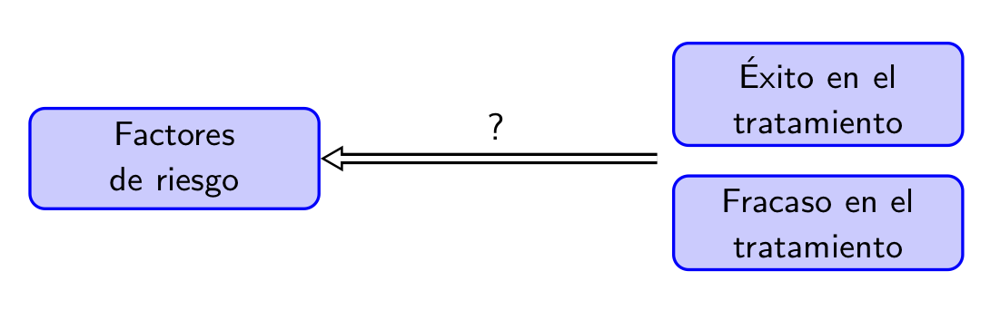
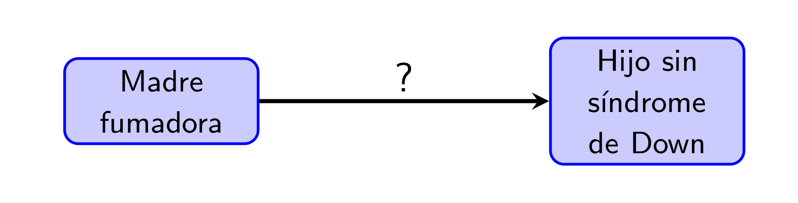
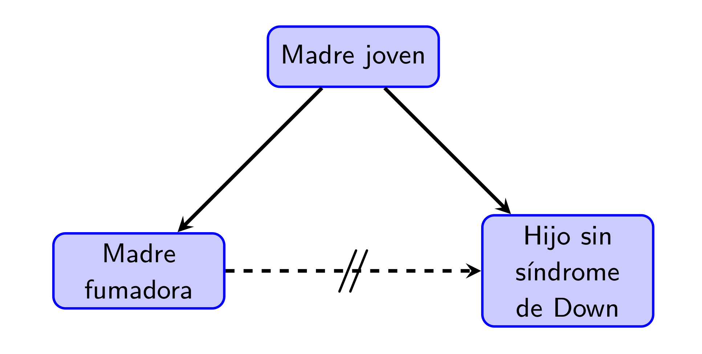
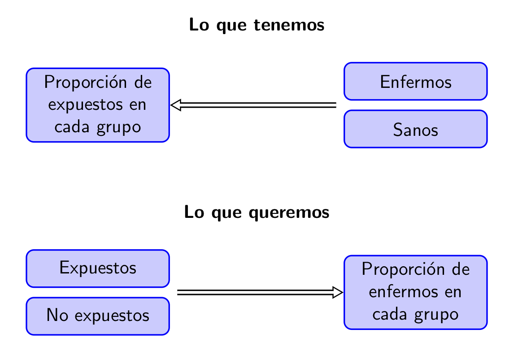
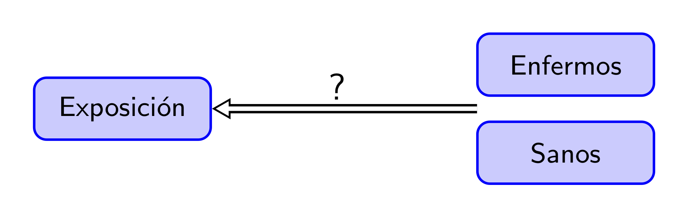
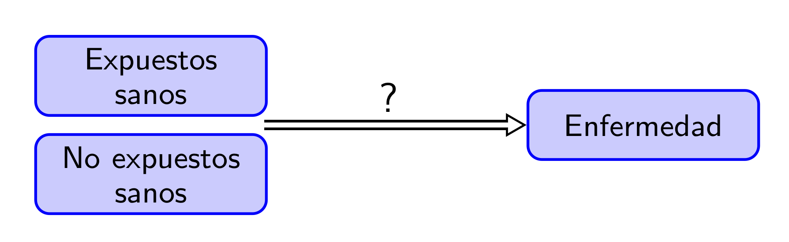
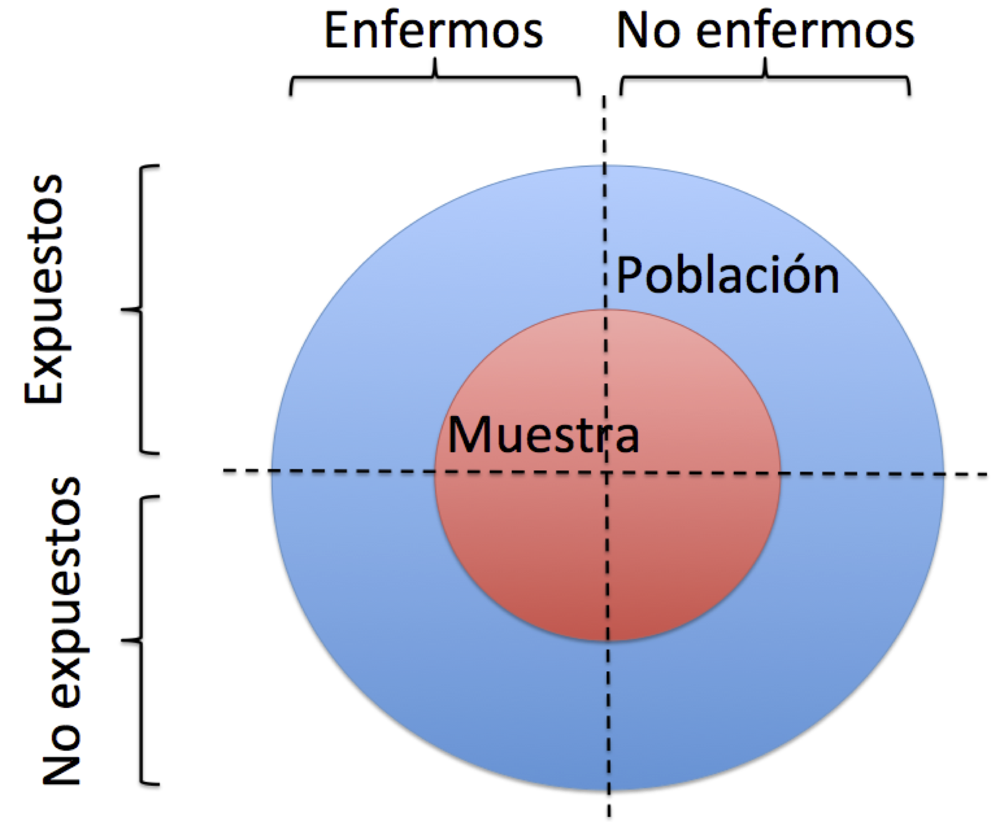
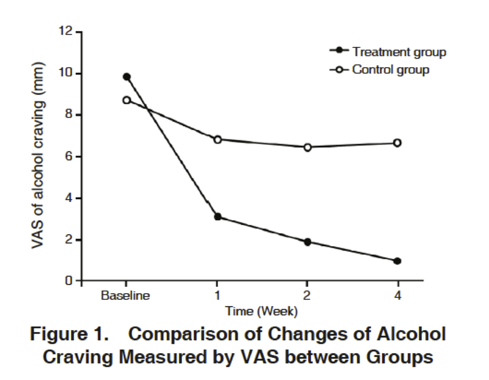

Lección 2 Estudios médicos
Un estudio es un proceso cuyo objetivo es obtener evidencia empírica sobre alguna cuestión. En el caso de los estudios médicos que nos ocupan en este curso, esta cuestión es, naturalmente, sobre algún aspecto de la salud de las personas: la efectividad de un tratamiento, la precisión de un test diagnóstico, las causas de una enfermedad, algún tema de salud pública…
Figura 2.1: Estudios médicos.
2.1 Pasos de un estudio médico
Para ir calentando motores, vamos a describir brevemente la estructura habitual de un estudio médico, y lo ilustraremos con el artículo “Marcha nórdica para prevención cardiovascular en pacientes con cardiopatía isquémica crónica o síndrome metabólico” (C. Vehí et al,1 Medicina Clínica 147 (2016), pp. 537-539) que convendría que fuerais consultando en paralelo a esta sección.
En un estudio médico por norma general se llevan a cabo los pasos siguientes:
Se definen los objetivos de la investigación. En este primer paso,
- Se describe la hipótesis general que se quiere investigar.
- Se concretan los objetivos específicos dentro de este marco general.
En el artículo que estamos siguiendo a modo de ejemplo:
- La hipótesis general es que el ejercicio físico es efectivo en la prevención de riesgos cardiovasculares.
- El objetivo específico es determinar si la marcha nórdica reduce los factores de riesgo cardiovascular en los individuos del área sanitaria mediterránea.
Se investigan los antecedentes sobre los objetivos específicos: ¿Qué se sabe sobre el tema?
En nuestro ejemplo, los autores recogen algunos beneficios generales de la marcha nórdica y luego afirman que “no hay datos de esta modalidad de ejercicio en el ámbito médico de la población mediterránea”.
Se planifica cómo se van a recoger los datos.
En nuestro ejemplo, encontraréis el detalle de este punto en el apartado “Material y métodos” del artículo: diseño del estudio, criterios de inclusión de los participantes, actividad que tenían que realizar los participantes y cómo se recogieron los datos.
Se ejecuta el plan trazado y se recogen los datos.
Se analizan los datos.
En nuestro ejemplo, los resultados de este análisis se recogen básicamente en la Tabla 2 del artículo.
Se extraen conclusiones.
En nuestro ejemplo, las encontraréis en el apartado “Discusión y conclusiones” del artículo. Básicamente, los autores concluyen que “Un programa de marcha nórdica es factible en el sistema sanitario público y puede ser útil para mejorar el control de los factores de riesgo cardiovascular”.
Se publican los resultados.
Pues eso, los resultados del estudio de nuestro ejemplo se publicaron en el artículo que estamos comentando.
Es un buen momento para que volváis al artículo y observéis su estructura, típica de los artículos en ciencias experimentales. Se trata de la estructura IMRyD, acrónimo de:
Introducción, donde se recogen los pasos 1 y 2 del proceso anterior.
Metodología (“Material y métodos”, en este artículo concreto), donde se detallan los pasos 3 y 4.
Resultados, donde se explica el análisis de los datos y los resultados “numéricos” del mismo, sin extraer conclusiones aún (en plan “obtuvimos esto, esto, esto y esto”).
Discusión (“Discusión y conclusiones”, en este artículo concreto), donde se completa el análisis de los datos, se extraen las conclusiones y se discute su alcance.
El artículo científico además tiene otras dos partes muy importantes:
El Resumen (Abstract) al principio, describiendo lo más relevante de cada una de las cuatro partes centrales del artículo. Este resumen está relacionado con el último paso del proceso de investigación, la publicación de resultados, ya que en la mayoría de los casos es lo único que leemos, entrando solo en el detalle del artículo cuando, tras la lectura del resumen, decidimos que nos interesa de verdad.
La Bibliografía al final, relacionada en parte con el paso 2 (los antecedentes).
Figura 2.2: Correspondencia entre los pasos de un estudio y la estructura IMRyD de un artículo científico.
2.2 Algunos calificativos para los estudios médicos
Podemos clasificar los estudios médicos de diferentes maneras:
Según su alcance:
Descriptivos: Se limitan a describir las características de un grupo de individuos.
Analíticos: Intentan inferir asociaciones para el total de la población (de tipo causa/efecto, antecedente/desenlace, …).
Por ejemplo:
- “A cinco pacientes con la enfermedad X les hemos administrado el tratamiento A y tres estaban curados a los 8 días de iniciar el tratamiento. Y punto.”: Descriptivo.
- “Hemos dividido un grupo de pacientes con la enfermedad X en dos grupos. A unos les hemos administrado el tratamiento A y a los otros el tratamiento B. Los tratados con A han tenido una tasa de curación a 8 días vista mucho más alta que los tratados con B. Llegamos a la conclusión que el tratamiento A es más efectivo que el B para los enfermos de X.”: Analítico.
Según el papel jugado por el investigador:
Observacionales: El investigador se limita a recoger datos, sin ejercer ninguna influencia planificada sobre los acontecimientos que generan estos datos.
Intervencionista: El investigador influye de manera planificada en los acontecimientos que generan los datos que recoge.
Por ejemplo:
- “Hemos recogido datos de todos los pacientes con la enfermedad X en nuestro hospital durante un año y anotado qué tratamiento se les ha administrado. Los tratados con A han presentado una tasa de curación a 8 días vista más alta que los tratados con B.”: Observacional.
- “Hemos dividido al azar un grupo de pacientes con la enfermedad X en dos grupos del mismo tamaño. A unos les hemos administrado el tratamiento A y a los otros el tratamiento B. Los tratados con A han tenido una tasa de curación a 8 días vista más alta que los tratados con B.”: Intervencionista.
Según el lapso de tiempo sobre el que se recoge la información:
Transversales: Se recoge información sobre un solo momento.
Longitudinales: Se recoge información sobre varios momentos de tiempo y se estudian los cambios producidos entre los mismos.
A su vez, estos últimos suelen dividirse en:
Prospectivos: Se recoge información en un momento concreto (normalmente, al inicio del estudio) y en momentos posteriores.
Retrospectivos: Se recoge información en un momento concreto (de nuevo, normalmente, al inicio del estudio) y sobre momentos anteriores.
Por ejemplo:
- “Hoy hemos tomado una muestra de 100 estudiantes de la UIB y les hemos hecho un test de COVID-19.” Transversal.
- “Hoy hemos tomado un grupo de enfermos de COVID-19 y les vamos a hacer un seguimiento para estudiar si la evolución de la enfermedad depende del Índice de Masa Corporal del enfermo en el momento del diagnóstico.” Longitudinal prospectivo.
- “Hoy hemos tomado un grupo de enfermos de COVID-19 con síntomas leves y un grupo con síntomas muy graves, y les hemos preguntado por su hábito de uso de mascarilla en las últimas semanas.” Longitudinal retrospectivo.
Ejemplo 2.1 El estudio sobre la marcha nórdica de la sección anterior es:
Analítico, puesto que su objetivo es inferir los efectos de la marcha nórdica en los factores de riesgo cardiovascular para las personas del área sanitaria mediterránea, no solo describir qué les pasó a los 23 individuos que participaron en el estudio.
Longitudinal prospectivo, puesto que se compararon datos tomados en el momento de iniciar el estudio y al cabo de un año.
Intervencionista, puesto que los investigadores influyeron en el comportamiento de los participantes al hacerles realizar unas sesiones semanales de marcha nórdica con el fin de estudiar su efecto.
Combinando los tipos de estudio según el papel jugado por el investigador y según el lapso de tiempo sobre el que se recoge la información, tenemos estudios:
- Observacionales transversales
- Observacionales prospectivos
- Observacionales retrospectivos
- Intervencionistas transversales
- Intervencionistas prospectivos
- Intervencionistas retrospectivos
Acabamos de ver que hay estudios intervencionistas prospectivos. ¿Los hay de las otras cinco clases de estudios de esta lista, o hay algún par de características que es imposible que se den simultáneamente?
En las siguientes secciones discutimos con más detalle los tipos más básicos de estudios médicos, anotados en la Figura 2.3.
Figura 2.3: Tipos básicos de estudios médicos.
2.3 Estudios descriptivos
Los tres tipos principales de estudios descriptivos son:
Informe de caso: La descripción detallada de un paciente.
Serie de casos: Descripción detallada de un conjunto pequeño de pacientes (pero más de uno, o sería un informe de un caso) con algún problema de salud en común. La información se recoge por medio de sus historias clínicas y entrevistas clínicas.
- Encuesta (Survey): Descripción de un conjunto “grande” de individuos con alguna característica en común. La información se recoge por medio de cuestionarios o entrevistas.
Recordad que los estudios descriptivos solo describen un sujeto o un conjunto de sujetos, sin pretender ir más allá. Aparte de su utilidad como anécdota (“¡Mira, a este esto le funcionó, vamos a probar a ver!”) y para alertar de nuevas enfermedades, sirven principalmente para identificar observaciones interesantes que merezcan ser investigadas.
Ejemplo 2.2 Lo que más tarde se reconocería como la epidemia de SIDA se presentó en sociedad en unas primeras series de casos publicadas a principios de los años 1980. En ellos se describían casos de jóvenes homosexuales sanos que habían desarrollado enfermedades relacionadas con una deficiencia grave del sistema inmunitario, como por ejemplo infecciones oportunistas o el sarcoma de Kaposi (un tipo de cáncer de piel asociado a una infección vírica que hasta entonces solo se había detectado básicamente en ancianos de ascendencia judía o mediterránea y en jóvenes en África). Cuando el número de publicaciones de casos similares fue abrumador, se llevó a cabo un estudio de casos y controles (casos: enfermos de lo que fuera esa enfermedad; controles: personas sanas de características similares a los casos; explicaremos los estudios de casos y controles en la próxima sección) para determinar cuáles eran las características, hábitos, comportamientos etc. que tenían en común los enfermos y no compartían con los sanos.
Ejemplo 2.3 El artículo “Diabetes tipo 2 en niños. Serie de casos” (H. Manrique-Hurtado et al, Revista Médica Herediana 26 (2015), pp. 5-9) es, como indica su título, un ejemplo típico de serie de casos. Se trata de una descripción detallada de las características de todos los niños y adolescentes diagnosticados de diabetes tipo 2 (DM2) en dos hospitales de Lima (Perú) entre 2008 y 2013. En total, se describen 32 sujetos de entre 8 y 19 años.
Entre otras características, se observó que, en el momento del diagnóstico, el 85% de ellos presentaban acantosis pigmentaria (un transtorno de la piel); que un 17% tenían cetoacidosis diabética (CAD), que suele ir asociada a diabetes tipo 1 y no 2; y que estos últimos presentaban todos una serie de características comunes, por ejemplo todos tenían acantosis pigmentaria.
Todas estas observaciones sirven para confirmar, o contradecir, observaciones realizadas en otros momentos u otros países sobre enfermos de DM2 en esta franja de edad. Además, plantean cuestiones sobre la DM2 en niños y adolescentes que pueden ser susceptibles de responderse mediante estudios analíticos. Por ejemplo: ¿Es la acantosis pigmentaria un síntoma frecuente de DM2 entre niños y adolescentes? ¿Presentar CAD y acantosis pigmentaria es más síntoma de DM2 que de DM1 entre niños y adolescentes?
Ejemplo 2.4 En el estudio “Survey of COVID-19 Disease Among Orthopaedic Surgeons in Wuhan, People’s Republic of China” (X. Guo et al, The Journal of Bone and Joint Surgery 102 (2020), pp. 847-854), se pasó un cuestionario a todos los cirujanos ortopédicos del área urbana de Wuhan (China) que no habían sido destinados específicamente a tratar enfermos de COVID-19. El objetivo era identificar cuántos habían tenido COVID-19 antes de finales de febrero de 2020 y recoger una serie de características de interés sobre ellos: sus síntomas, a cuánta gente contagiaron, su estado de salud previo al contagio, la distancia de su hospital al Mercado de Huanan (el presunto origen de la pandemia) etc. Se encontraron en total 24 infectados, y sus características se describen en el artículo mencionado.
Esta parte del estudio es descriptiva: una descripción de todos los casos de COVID-19 en un colectivo concreto. El estudio luego tuvo una segunda parte analítica que clasificaremos como de casos y controles en la próxima sección.
Hemos dicho que una serie de casos describe un grupo pequeño de individuos, y que un survey describe un grupo grande. En la serie de casos del Ejemplo 2.3 se describieron 32 pacientes, y en el survey (así es como lo clasifican sus autores en el título) del Ejemplo 2.4 solo 24 infectados. ¿32 es pequeño y 24 es grande?
¡Claro que no! La diferencia aquí está en cómo se obtuvo la información: por medio de historias clínicas en el estudio peruano y por medio de un cuestionario en el estudio chino. Además, en este segundo caso el cuestionario se pasó a 428 médicos, por lo que el número de pacientes “descritos” podría haber sido mucho mayor.2.4 Estudios de casos y controles
En un estudio de casos y controles:
Se toma un grupo de individuos con una enfermedad (los casos) y un grupo de individuos sin esta enfermedad (los controles)
Se les compara retrospectivamente para encontrar diferencias en su exposición a factores de riesgo en el pasado.
Se determinan qué factores de riesgo fueron más frecuentes entre los casos que entre los controles.
Se infiere (mejor dicho, se estudia si se puede inferir) que, en la población general, la exposición a dichos factores está asociada a una mayor probabilidad de sufrir la enfermedad.
Figura 2.4: Esquema del estudio de casos y controles del Ejemplo 2.5.
Ejemplo 2.5 En uno de los primeros estudios de casos y controles, R. Doll y A. Bradford Hill tomaron 1357 casos de hombres con cáncer de pulmón y 1357 controles, hombres con cáncer de otros tipos. Les preguntaron por el número medio diario de cigarrillos que habían fumado durante los 10 años anteriores al diagnóstico. Los resultados fueron los de la Figura 2.5, donde se observa una clara tendencia a ser más fumador entre los casos que entre los controles.
Figura 2.5: Consumo de tabaco en la muestra analizada por R. Doll y R. Bradford Hill en “Study of the Aetiology of Carcinoma of the Lung”, British Medical Journal 2 (1952), pp. 1271–1286.
Los estudios de casos y controles son:
Observacionales, porque se recogen datos y se analizan sin influir en las características que se han medido.
Analíticos, puesto que el objetivo es deducir la asociación entre los factores de riesgo y la enfermedad a nivel poblacional.
Longitudinales, puesto que se analiza información sobre un período de tiempo, que va desde el momento en que los sujetos son declarados casos o controles hacia el pasado. Por lo tanto, son además retrospectivos.
Veamos un estudio de casos y controles más reciente.
Ejemplo 2.6 En el estudio “Tabaquismo y fracaso del tratamiento de la tuberculosis pulmonar. Un estudio de casos y controles” (J. P. Aguilar et al, Jornal Brasileiro de Pneumologia 45.2 (2019), e20180359) se tomaron todos los pacientes que recibieron tratamiento contra la tuberculosis en una institución brasileña concreta entre 2007 y 2015 y que además satisfacían algunas restricciones extra (mayores de 15 años, sin diabetes ni SIDA…). Se definieron como casos aquellos pacientes en los que el tratamiento fracasó (según unos criterios precisos) y como controles aquellos pacientes en los que tuvo éxito. En total fueron 50 casos y 234 controles.

Se analizaron un buen número de antecedentes que pudieran influir en el desenlace del tratamiento de la tuberculosis: sexo, edad, historial de fumador, historial de consumo de alcohol, salario etc. La única diferencia “significativa” que encontraron fue en el fumar: un 52% de los casos eran fumadores en el momento del diagnóstico de la tuberculosis o lo habían sido antes, contra solo un 30% de los controles. En cambio, por ejemplo, eran consumidores frecuentes de alcohol en el momento del diagnóstico de la tuberculosis o lo habían sido antes un 59% de los casos y un 52% de los controles, una diferencia que no fue lo suficientemente grande como para poder considerarla “significativa”.
El adjetivo significativo (en realidad, estadísticamente significativo, pero por ahora omitiremos el adverbio “estadísticamente” para abreviar), que ha salido dos veces y hemos entrecomillado en el párrafo anterior, tiene un significado muy concreto en estadística, sobre el que volveremos más adelante en el curso. Por ahora lo tomaremos en el sentido intuitivo de tan grande que sería muy raro que fuera casualidad, lo que nos hace sospechar que también hay diferencia en la población en general. Por ejemplo:
La diferencia entre el 52% de fumadores entre los casos y el 30% de fumadores entre los controles fue tan grande, que hubiera sido muy improbable si, en la población general, la proporción de fumadores entre los casos no fuera mayor que entre los controles.
Esto nos lleva a concluir que la proporción de fumadores entre los individuos en los que el tratamiento de tuberculosis fracasa es mayor que entre aquellos en los que tiene éxito.
La diferencia entre el 59% de consumidores frecuentes de alcohol entre los casos y el 52% entre los controles no fue lo bastante grande como para ser muy improbable si, en la población general, la proporción de consumidores frecuentes de alcohol entre los casos fuera la misma que entre los controles.
En este caso, no tenemos base para concluir que la proporción de consumidores frecuentes de alcohol entre los individuos en los que el tratamiento de tuberculosis fracasa sea mayor que entre aquellos en los que tiene éxito.
En este estudio, los números de casos y controles no se prefijaron en su diseño, sino que se tomaron “los que encontraron” en un grupo de individuos. Por lo tanto, en principio, su composición en casos y controles refleja la de la población. Diremos en casos como este que el grupo de sujetos analizados forman una muestra transversal de la población.
Id con cuidado, que el adjetivo transversal ya ha salido con dos significados diferentes (y aún habrá un tercero):
- Estudio transversal en el tiempo: Se recogen datos sobre un solo momento.
- Muestra transversal: Una muestra cuya composición en diferentes clases (por ejemplo, en casos y controles) no está prefijada de ninguna manera, y por lo tanto esperamos que sea representativa de la población.
Esto no siempre es así, y a veces se toman números concretos, o al menos relacionados entre si, de casos y controles: tantos casos como controles, el doble de controles que de casos… Llamaremos a una muestra de este estilo estratificada (Sección 3.3.3). Es importante distinguir las muestras transversales de las estratificadas, porque hay que tener en cuenta el tipo de muestra que se ha tomado a la hora de realizar el análisis estadístico de los datos y extraer conclusiones.
Por ejemplo, tal y como se tomó la muestra en el estudio anterior, tiene sentido calcular la proporción de tuberculosos de la muestra sobre los que el tratamiento tuvo éxito y usar esta proporción para estimar la tasa de éxito del tratamiento entre los tuberculosos en general. En cambio, imaginad que se hubieran tomado a propósito el mismo número de casos que de controles. Ahora la proporción de tuberculosos tratados con éxito en la muestra sería “artificial”, y no se podría usar para inferir información sobre la tasa de éxito del tratamiento.
Veamos dos ejemplos de estudios de casos y controles con muestras estratificadas.
Ejemplo 2.7 Considerad el estudio “Efecto del alcohol y sus metabolitos en el cáncer de pulmón: estudio CAPUA” (S. M. Álvarez-Avellón et al, Medicina Clínica 148 (2017), pp. 531-538). En él se incluyeron 876 casos, enfermos de cáncer de pulmón ingresados en una serie de hospitales asturianos entre 2000 y 2010, y 840 controles, pacientes que fueron atendidos en los mismos hospitales que los casos por patologías no relacionadas con ningún factor de riesgo conocido de cáncer de pulmón. Se les entrevistó para conocer sus hábitos alimentarios y de consumo de alcohol y tabaco y se les realizó un análisis genético de los polimorfismos de algunos genes que codifican enzimas participantes en el metabolismo del alcohol y el folato (un tipo de vitamina B). Copiamos algunas conclusiones:
Un consumo de alcohol de 0.1-9.9 g/día disminuye el riesgo de cáncer de pulmón, aunque la diferencia no es significativa.
Un consumo de alcohol de ≥ 30 g/día y de tabaco de ≥ 36 paquetes/año aumenta significativamente el riesgo de cáncer de pulmón.
Un consumo de alcohol de 10-29.9 g/día en individuos portadores del alelo ADH1B 48His aumenta de manera significativa el riesgo de cáncer de pulmón.
Ejemplo 2.8 Volvamos al Ejemplo 2.4. Una vez identificados los 24 cirujanos que habían tenido la COVID-19, se escogieron al azar 48 cirujanos (dos por cada enfermo) que no habían tenido (aún) la COVID-19 de entre los que habían respondido el cuestionario. Se compararon entonces los datos sobre la exposición previa a algunos factores de riesgo entre ambos grupos: grado de fatiga, horas de sueño, uso de mascarilla al tratar con pacientes, etc. Esta segunda parte del estudio es claramente de casos (cirujanos que habían tenido COVID-19) y controles (cirujanos que no habían tenido COVID-19).
En este estudio chino se puede observar la gran ventaja de un estudio de casos y controles sobre un estudio descriptivo: el disponer del grupo de control para poder comparar. Por ejemplo, resultó que un 58.7% de los cirujanos que habían tenido COVID-19 no habían recibido formación específica reciente sobre control de infecciones. Son muchos, pero esta cifra aislada no sirve para concluir que no haber recibido formación específica reciente sobre control de infecciones aumenta el riesgo de contraer la COVID-19. A lo mejor ese 58.7% es el porcentaje global de cirujanos ortopédicos de Wuhan que no habían recibido este tipo de formación, en cuyo caso no habría diferencia entre haber tenido o no COVID-19 en este aspecto.
El grupo de control es el que nos sirve de referencia y permite comparar este porcentaje con la población “sana”. El porcentaje de controles que no habían recibido formación específica reciente sobre control de infecciones fue solo del 33%. Ahora sí vemos que la proporción de “expuestos al factor de riesgo” (no recibir este tipo de formación) entre los casos es mucho mayor que entre los controles.
Hemos dicho que la diferencia entre casos y controles es la presencia o no de una “enfermedad” y que se analiza su exposición previa a “factores de riesgo”. Aquí tanto “enfermedad” como “factores de riesgo” se han de tomar en un sentido metafórico. Los casos son individuos a los que “ahora” (en un momento determinado) les pasa “algo”, que puede ser una enfermedad pero también puede ser un embarazo o suspender una asignatura o cualquier otro desenlace (su nombre técnico), y se estudia “qué les ha ocurrido” antes del desenlace (la exposición) para intentar establecer una posible relación de causa-efecto.
Por ejemplo:
Podemos querer determinar mediante un estudio de casos y controles si el fracaso escolar está asociado a un aumento de la probabilidad de ser fumador. Entonces, tomamos como casos un grupo de fumadores y como controles un grupo de no fumadores, y consultamos su historial académico.
Podemos querer determinar mediante un estudio de casos y controles si los fumadores tienen una mayor probabilidad de fracaso escolar. Entonces, tomamos como casos un grupo de personas que no llegaron a terminar la ESO y como controles un grupo de universitarios, y les pedimos cuánto fumaban en Secundaria.
Por otro lado, tened presente que una exposición puede ser perjudicial en algún aspecto y beneficiosa en otro. Por ejemplo, tomar el sol está asociado a un incremento del riesgo de cáncer de piel y en este sentido es perjudicial. Pero también está asociado (vía la producción de vitamina D) a una disminución del riesgo de cáncer de colon, por lo que en este sentido es beneficioso.
Algunas ventajas de los estudios de casos y controles:
Suelen ser fáciles de llevar a cabo y rápidos (todos los datos se pueden recoger sin tener que hacer un seguimiento a los sujetos) y por lo tanto relativamente baratos; también en los estudios médicos el tiempo es oro.
Son adecuados para estudiar enfermedades raras, poco frecuentes o de desarrollo muy corto, ya que podemos partir de un grupo de enfermos que tengamos identificados previamente y un grupo de sanos, sin tener necesidad de buscar enfermos en una muestra transversal de individuos. Fijaos en que si los enfermos son muy escasos, para encontrar un número razonablemente grande de ellos en una muestra transversal, es de esperar que tuviéramos que tomar una muestra enorme. Esto dificultará la ejecución del estudio.
Podemos estudiar de golpe la asociación entre la exposición a muchos factores de riesgo y la enfermedad que nos ocupa.
Y ahora algunos inconvenientes.
El primero ya lo hemos advertido hace un instante. Un estudio de casos y controles no puede “demostrar” que la exposición a un riesgo “cause” un desenlace. Ni un estudio de casos y controles, ni ningún otro tipo de estudio observacional. En realidad, si nos apuráis, ningún tipo de estudio médico puede demostrar con total seguridad que la exposición a un riesgo causa un desenlace.
Por ejemplo, en el estudio de casos y controles sobre consumo de alcohol y cáncer de pulmón del Ejemplo 2.7 observaron que entre los enfermos de cáncer de pulmón había una mayor frecuencia de sujetos que consumían al menos 30 gramos diarios de alcohol y 36 paquetes de tabaco anuales, y de aquí concluyen que “un consumo de alcohol de ≥ 30 g/día y de tabaco de ≥ 36 paquetes/año aumenta significativamente el riesgo de cáncer de pulmón”.
Pero esta afirmación hay que entenderla. De ninguna manera están afirmando que un consumo de alcohol de ≥ 30 g/día y de tabaco de ≥ 36 paquetes/año “cause un aumento” del riesgo de cáncer de pulmón. Lo que quieren decir es simplemente que los individuos con estos malos hábitos tienen una mayor probabilidad (en el sentido de que es más frecuente) de cáncer de pulmón que el resto de la población. Esta mayor probabilidad puede ser debida a fumar y beber en exceso, pero también a alguna otra causa desconocida relacionada por un lado con el consumo de tabaco y alcohol y por otro con el cáncer de pulmón. Se trataría de un confundidor, una característica asociada con la exposición que puede causar la enfermedad.
Por ejemplo, podríamos encontrar una asociación entre tomar café y tener cáncer de pulmón que fuera debida a que los consumidores de café tienden a ser fumadores y el fumar aumenta la probabilidad de cáncer de pulmón, sin que el café por si mismo aumente dicha probabilidad.
Figura 2.6: “-Do you smoke? -Only when I drink [pausa] coffee.” Roberto Benigni en Strange to meet you de Jim Jarmusch; https://www.youtube.com/watch?v=pBa-2nXCc7g
Los estudios de casos y controles (y en general todos los estudios observacionales) son muy susceptibles al efecto de confundidores. Veamos un ejemplo famoso.
Ejemplo 2.9 En el estudio de casos y controles “Congenital malformations and maternal smoking during pregnancy” (P. Shiono et al, Teratology 34 (1986), pp. 65-71) se observó que las madres fumadoras tenían una frecuencia menor de hijos con síndrome de Down. ¿Se había encontrado por fin un efecto beneficioso del tabaco?

No, ¡qué va! Más tarde, en el artículo “Maternal smoking and Down syndrome: the confounding effect of maternal age” (C. L Chen et al, American Journal of Epidemiology 149 (1999), pp. 442-446) se observó que no se había tenido en cuenta la edad de las madres. Las madres jóvenes suelen ser fumadoras con mayor frecuencia que las no tan jóvenes, y las madres de más de 40 años tienen una mayor frecuencia de hijos con síndrome de Down. Aquí la edad es el factor confundidor que hace que parezca que las mujeres fumadoras tienen menor probabilidad de tener hijos con síndrome de Down, cuando en realidad son las madres jóvenes las que son más fumadores y tienen menos hijos con síndrome de Down.

Seguimos con los inconvenientes. Los estudios de casos y controles son muy susceptibles a algunos tipos de sesgos concretos relacionados con la manera cómo se recogen los datos. Un sesgo en un estudio es un error sistemático que afecte a los datos recogidos y pueda perjudicar la corrección de las conclusiones obtenidas. Estudiaremos el tema de los sesgos en general con más detalle en la Sección 3.4. Por ahora, vamos a anotar varios sesgos típicos que pueden darse en estudios de casos y controles.
- Si los datos sobre la exposición a riesgos se recogen mediante entrevistas o cuestionarios, los sujetos pueden mentir (recordad la máxima “Todo el mundo miente” del Dr. G. House y los internistas en general), consciente (para ocultar comportamientos de los que se avergüencen, para contentar el entrevistador,…) o inconscientemente (por haber olvidado detalles relevantes). O al menos puede que no recuerden bien los detalles. En ambos casos diremos que se produce un sesgo de recuerdo.
En particular, se puede dar un sesgo de recuerdo diferencial, ya que los casos y los controles pueden recordar datos relevantes de manera diferente. Si uno tiene un percance, suele recordar con más frecuencia los detalles previos al mismo para buscar “qué hizo mal” que una persona que no lo haya tenido.
También se puede dar un sesgo de supervivencia, si solo se estudian individuos “vivos”. Por ejemplo, si queremos llevar a cabo un estudio de casos y controles para una enfermedad rara con una tasa de mortalidad a corto plazo muy alta y tomamos como casos enfermos diagnosticados que estén vivos, puede que bastantes de ellos hayan sobrevivido más tiempo a la enfermedad que lo normal y por lo tanto no sean casos típicos.
Pero si se quiere incluir casos ya fallecidos, seguramente habrá que entrevistar a familiares para conocer detalles de su exposición a factores de riesgo y aumenta el peligro de sesgo de recuerdo. Si uno ya ha difuminado en su memoria los riesgos que corría hace 10 años, mucho menos los recordarán sus familiares.
Por otro lado, hay que tener mucho cuidado en la selección de controles. En teoría, para poder concluir que hay asociación entre la exposición y la enfermedad, sería necesario que:
- Los controles fueran similares a los casos en todos los aspectos salvo en la exposición.
- Los controles fueran representativos de la población de sanos.
En la práctica es muy difícil conseguir ambas condiciones, sobre todo si la población de sanos no está bien definida.
Así por ejemplo, en el estudio sobre alcoholismo y cáncer de pulmón del Ejemplo 2.7, la elección de los controles entre individuos hospitalizados podría haber sesgado este grupo. La ingesta desmesurada de alcohol aumenta el riesgo de patologías que no sean cáncer de pulmón pero que impliquen ingreso hospitalario. Por lo tanto, podría ser que el alcoholismo fuera más frecuente entre personas hospitalizadas que en la población en general. Los autores tuvieron que tener mucho cuidado en este aspecto, eligiendo hospitalizados de algo que a priori no tuviera nada que ver con el consumo de alcohol.
O en el ejemplo sobre el fracaso del tratamiento de la tuberculosis del Ejemplo 2.6, hubiera sido un error tomar como controles pacientes tratados con éxito de otras clínicas, que pudieran seguir protocolos de tratamiento diferentes, ya que entonces los controles no serían comparables a los casos.
El siguiente es un ejemplo famoso de la importancia de elegir bien los controles:
Ejemplo 2.10 En el artículo “Association Between Malaria and Invasive Nontyphoidal Salmonella Infection in a Hospital Study: Accounting for Berkson’s Bias” (R. Krumkamp et al, Clinical Infectious Diseases 62 (2016), pp. S83–S89), se explica un estudio de casos y controles que en realidad fueron dos. El objetivo era determinar si la malaria es un factor de riesgo para la salmonelosis. Se tomaron como casos todos los niños ingresados en dos hospitales de Ghana con salmonelosis. Entonces:
En un primer estudio, se toman como controles todos los niños hospitalizados en los mismos hospitales con otras enfermedades bacterianas. Se obtuvo que la frecuencia de infecciones previas de malaria entre los casos fue significativamente mayor que entre los controles.
En un segundo estudio, se toman como controles un grupo de niños sin ninguna enfermedad bacteriana. Se obtuvo que la frecuencia de infecciones previas de malaria entre los controles fue significativamente mayor que entre los casos.
Hemos dejado para el final un inconveniente muy específico de los estudios de casos y controles en el que igual ya habéis caído.
Fijaos en que el objetivo de un estudio de casos y controles es determinar si la exposición a un factor de riesgo aumenta la probabilidad de padecer una enfermedad y estimar en cuánto la aumenta. Por tanto, lo que se querría comparar son las proporciones de enfermos entre los expuestos y entre los no expuestos, para ver si la primera es mayor que la segunda y cuánto mayor es. Pero las proporciones que se observan son justamente las contrarias de las que nos interesan. En un estudio de casos y controles, medimos las proporciones de expuestos y no expuestos entre enfermos y sanos:
En el estudio sobre consumo de alcohol y cáncer de pulmón, en realidad se observó que entre los enfermos de cáncer de pulmón hubo una mayor frecuencia de consumo de 30 gramos diarios o más de alcohol y 36 paquetes de tabaco anuales o más. Pero lo que queremos saber es si se da más frecuentemente el cáncer de pulmón entre las personas con estos malos hábitos que en el resto de la población.
En la parte de casos y controles del estudio chino sobre cirujanos ortopédicos y COVID-19, se observó que la proporción de sujetos que no recibieron formación específica reciente sobre control de infecciones fue superior entre los enfermos de COVID-19 que entre los sanos. Pero lo que queremos saber es si la proporción de infectados entre los que no reciben esta formación es superior a la de infectados entre los que sí la reciben.

Pues bien, por un lado estamos de suerte: la conclusión global es correcta. Si la proporción de expuestos entre los casos es mayor que entre los controles, la proporción de casos entre los expuestos es mayor que entre los no expuestos.
Hagamos los cálculos. Supongamos que en nuestra muestra hay \(N\) casos y \(M\) controles. De los \(N\) casos, \(n_1\) estuvieron expuestos al factor de riesgo y \(n_0\) no. Entre los \(M\) controles, estos números son \(m_1\) y \(m_0\), respectivamente. Llamemos \(E_1=n_1+m_1\) al total de expuestos en la muestra y \(E_0=n_0+m_0\) al de no expuestos. Estos números se resumen en la tabla siguiente: \[ \begin{array}{r|c|c|c} & \text{Casos} & \text{Controles} & \text{Total} \\ \hline \text{Expuestos} & n_1 & m_1 & E_1\\ \hline \text{No expuestos} & n_0 & m_0 & E_0\\ \hline \text{Total} & N & M & N+M \end{array} \]
Ahora, en términos de estos valores:
Que haya una mayor proporción de expuestos entre los casos que entre los controles significa que \[ \begin{array}{rl} \displaystyle \frac{n_1}{N}>\frac{m_1}{M} & \Longleftrightarrow \displaystyle \frac{n_1}{n_1+n_0}>\frac{m_1}{m_1+m_0}\\ & \Longleftrightarrow n_1(m_1+m_0)>m_1(n_1+n_0) \\ & \Longleftrightarrow n_1m_0>m_1n_0 \end{array} \]
Que haya una mayor proporción de casos entre los expuestos que entre los no expuestos significa que \[ \begin{array}{rl} \displaystyle \frac{n_1}{E_1}>\frac{n_0}{E_0} & \Longleftrightarrow \displaystyle \frac{n_1}{n_1+m_1}>\frac{n_0}{n_0+m_0}\\ & \Longleftrightarrow n_1(n_0+m_0)>n_0(n_1+m_1) \\ & \Longleftrightarrow n_1m_0>n_0m_1 \end{array} \]
Como podemos ver, ambas condiciones son equivalentes.
Pero aquí se acaba nuestra suerte.
Ejemplo 2.11 Supongamos que tomamos un grupo de 100 enfermos de cáncer de pulmón (casos) y un grupo de 100 no enfermos de cáncer de pulmón (controles), y que entre los casos hay el triple de fumadores que entre los controles.
Supongamos en primer lugar que entre los casos hay 30 fumadores y entre los controles 10. La tabla de frecuencias es \[ \begin{array}{r|c|c|c} & \text{Casos} & \text{Controles} & \text{Total} \\ \hline \text{Fumadores} & 30 & 10 & 40\\ \hline \text{No fumadores} & 70 & 90 & 160\\ \hline \text{Total} & 100 & 100 & 200 \end{array} \] Entonces, la proporción de enfermos entre los fumadores es de 3/4, es decir, el 75%, y entre los no fumadores es de 7/16, es decir, el 43.80%: la primera es 1.71 veces la segunda.
Supongamos ahora que entre los casos hay 90 fumadores y entre los controles 30. La tabla de frecuencias ahora es \[ \begin{array}{r|c|c|c} & \text{Casos} & \text{Controles} & \text{Total} \\ \hline \text{Fumadores} & 90 & 30 & 120\\ \hline \text{No fumadores} & 10 & 70 & 80\\ \hline \text{Total} & 100 & 100 & 200 \end{array} \] La proporción de enfermos entre los fumadores sigue siendo del 75%, pero ahora entre los no fumadores es de 1/8, es decir, el 12.5%: la primera es 6 veces la segunda.
En ambos casos había el triple de fumadores entre los casos que entre los controles, pero al invertir las proporciones, han dado cocientes diferentes de las proporciones de enfermos entre fumadores y no fumadores.
Por suerte, como veremos más adelante, un truco matemático nos permitirá capear este problema.
Por otro lado, si tomamos unos números prefijados de casos y de controles que no representen las proporciones de enfermos y sanos en la población,
- ni las proporciones de casos entre los expuestos y no expuestos en nuestra muestra
- ni la proporción de expuestos en nuestra muestra
no tienen por qué ser representativas de estas proporciones en el total de la población.
Ejemplo 2.12 Supongamos de nuevo que tomamos un grupo de 100 enfermos de cáncer de pulmón (casos) y un grupo de 100 no enfermos de cáncer de pulmón (controles). Esta muestra no es representativa de la población, contiene muchos más enfermos de cáncer de pulmón de lo que cabría esperar en una muestra representativa de 200 personas (no es cierto que la mitad de la población tenga cáncer de pulmón, ¿verdad?).
Por lo tanto, es de esperar que las proporciones de casos entre los expuestos y los no expuestos no sean representativas de la población, ya que en la muestra hay más casos de los que “tocaría”.
Y también es de esperar que la proporción de fumadores en la muestra tampoco sea representativa de la población, porque hay más casos de lo que tocaría, y la proporción de fumadores entre los casos es mayor, por lo que la cantidad de fumadores es seguramente mayor de lo que cabría esperar en una muestra transversal de 200 personas.
2.5 Estudios de cohorte
En un estudio de cohorte:
Se toma un grupo de individuos expuestos a un factor de riesgo y un grupo de individuos no expuestos a dicho factor de riesgo, o más en general, varios grupos de individuos expuestos a diferentes factores de riesgo.
Se les realiza un seguimiento durante un período de tiempo para comparar prospectivamente (en el futuro) la aparición de una enfermedad en ambos grupos.
Se determina si es significativamente más frecuente la aparición de la enfermedad entre los expuestos que entre los no expuestos.
En caso afirmativo, se infiere que, en la población general, la exposición a dichos factores está asociada a una mayor probabilidad de sufrir la enfermedad.
Como el objetivo es estudiar la aparición de la enfermedad tras la exposición, los individuos participantes han de estar sanos (es decir, sin la enfermedad de interés) en el momento de iniciar su seguimiento.

Figura 2.7: No, esto no es una cohorte en el sentido de esta sección.
Ejemplo 2.13 Se han llevado a cabo muchos estudios de cohorte para analizar la asociación entre el hábito de fumar y el desarrollo de enfermedades pulmonares como la EPOC (Enfermedad Pulmonar Obstructiva Crónica). Por ejemplo, el realizado en el marco del estudio de Rotterdam (“Prevalence and incidence of COPD in smokers and non-smokers: the Rotterdam Study”; N. Terzikhan et al, European Journal of Epidemiology 31 (2016), pp. 785–792). En este estudio se realizó un seguimiento entre 1989 y 2009 a un grupo (variable, puesto que en algunos momentos se amplió la cohorte, pero vamos a expicar solo la idea general) de unos 14000 sujetos. De ellos, en el momento de incorporarse al estudio un 21.7% eran fumadores, un 43% habían sido fumadores pero ya no lo eran, y un 35.3% nunca habían fumado. En el primer grupo, un 26% desarrolló EPOC durante el seguimiento; entre el segundo grupo, un 13.6%, y en el tercero, un 6.4%. Las diferencias fueron significativas.
Figura 2.8: Esquema de un estudio de cohorte.
Los estudios de cohorte son también observacionales, analíticos y longitudinales, por exactamente los mismos motivos que los de casos y controles. La información que se analiza va desde el momento en que los sujetos son clasificados según su exposición a factores de riesgo hacia adelante, para ver si desarrollan la enfermedad, y por tanto siempre es prospectiva. Sin embargo, se suele distinguir entre estudios de cohorte prospectivos y retrospectivos según el momento (presente o pasado) en que se realiza la clasificación en expuestos y no expuestos:
- Estudios de cohorte prospectivos: se toman los expuestos y no expuestos a día de hoy, y se estudia su evolución futura (por tanto, esperando a que pase un cierto período de tiempo).
El estudio de Rotterdam fue prospectivo. Veamos otro ejemplo de estudio de cohorte prospectivo.
Ejemplo 2.14 Como su título indica, en el artículo “Increased risk of irritable bowel syndrome after bacterial gastroenteritis: cohort study” (L. A. García Rodríguez y A Ruigómez, British Medical Journal 318 (1999), 565-566) se publican los resultados un estudio de cohorte destinado a determinar si tener una gastroenteritis bacteriana aumenta el riesgo de padecer posteriormente síndrome de colon irritable (SCI). Para ello, los autores realizaron un seguimiento a un grupo de pacientes que sufrieron un episodio de gastroenteritis bacteriana y lo compararon con un grupo de individuos sin gastroenteritis bacteriana. De ambos grupos se excluyeron los pacientes que ya tenían un historial de SCI; recordad que en el inicio del estudio los sujetos han de estar libres de la enfermedad que se quiere ver aparecer. Además también se excluyeron los que tenían algún factor de riesgo conocido del SCI (cáncer de colon, alcoholismo…), para poder “garantizar” que su riesgo de aparición del SCI fuera similar, salvo por la gastroenteritis.
Se realizó un seguimiento a ambos grupos durante un año, al cabo del cual un 0.3% de la cohorte sana y un 4.4% de la cohorte con gastroenteritis habían sido diagnosticados de SCI.
- Estudios de cohorte retrospectivos o históricos: se toman los expuestos y no expuestos en un cierto momento del pasado, y se estudia su evolución hasta el día de hoy (sin tener que esperar nada de tiempo).
Figura 2.9: Estudios de cohorte prospectivos y retrospectivos.
Veamos un ejemplo de estudio de cohorte retrospectivo.
Ejemplo 2.15 En el estudio “Mortalidad en pacientes con psoriasis. Análisis de una cohorte retrospectiva” (W. Masson et al, Medicina Clínica 148 (2017), pp. 483-488), llevado a cabo en 2016, se tomó una cohorte formada, por un lado, por todos los pacientes del Sistema de Salud de Buenos Aires que a día 1/1/2010 tenían diagnóstico activo de psoriasis, en total 1500, y por otro, por un grupo de control formado por 1500 pacientes elegidos al azar entre el resto de sujetos del mismo Sistema de Salud. Se anotaron los sujetos de ambos grupos que fallecieron antes del 30/6/2015. La tasa de mortalidad en el grupo de enfermos de psoriasis fue significativamente más alta que en el grupo de control. La conclusión fue, por lo tanto, que los enfermos de psoriaris tienen un mayor riesgo de defunción a 5 años vista.
Observad las diferencia entre un estudio de casos y controles y un estudio de cohorte. Aunque ambos sean observacionales, analíticos y longitudinales:
- En un estudio de casos y controles, se clasifica el grupo de sujetos en sanos y enfermos y se estudia su exposición anterior a esta clasificación a los factores de riesgo objeto de estudio.

- En un estudio de cohorte, se clasifica el grupo de sujetos sanos en expuestos y no expuestos y se estudia el desarrollo posterior a esta clasificación de la enfermedad objeto de estudio. Si el estudio es de cohorte retrospectivo, la clasificación se realiza en el pasado, pero igualmente se determina si la enfermedad aparece en algún momento posterior a dicha clasificación.

En una nota de prensa de la Universidad de Michigan podemos leer:
El peso al nacer tiene efectos importantes y duraderos, según revela un estudio difundido por la Universidad de Michigan. Pesar menos de 2.5 kg al nacer aumenta en un tercio las posibilidades de abandonar la escuela secundaria, reduce las ganancias anuales en alrededor de un 15% […].
Considerad la pregunta de investigación siguiente: El peso al nacer, ¿influye en el éxito académico?
Diseñad un estudio de casos y controles cuyo objetivo sea responder a esta pregunta.
Diseñad un estudio de cohorte prospectivo cuyo objetivo sea responder a esta pregunta.
Diseñad un estudio de cohorte retrospectivo cuyo objetivo sea responder a esta pregunta.
¿Cuál de los tres escogeríais llevar a cabo? ¿Por qué?
Leed la nota de prensa y decidid qué calificativo describe mejor el estudio realizado por los científicos de la Universidad de Michigan: casos y controles, cohorte prospectivo, cohorte retrospectivo o ninguno de los anteriores.
Algunas ventajas de los estudios de cohorte:
Los estudios de cohorte son adecuados para estudiar factores de riesgo raros, por el mismo motivo que los de casos y controles lo son para estudiar enfermedades raras,
Permiten estimar las probabilidades en el sentido que nos interesa: siempre tiene sentido calcular las proporciones de expuestos y no expuestos que desarrollan una enfermedad, mientras que en un estudio de casos y controles en principio solo tiene sentido calcular las proporciones de enfermos y sanos que previamente estuvieron expuestos al factor de riesgo.
Los estudios de cohorte retrospectivos suelen ser, como los de casos y controles, relativamente fáciles de llevar a cabo, rápidos y baratos.
Al hacer un seguimiento desde el momento de la exposición en adelante, son útiles no solo para estimar la proporción de expuestos y no expuestos que desarrollan la enfermedad, sino también la incidencia de la enfermedad en ambos grupos.
La incidencia de una enfermedad en una población mide el número de casos nuevos de dicha enfermedad en un período de tiempo. “Nuevos” quiere decir que no se cuentan en la incidencia los sujetos que ya estaban enfermos en el momento de iniciar el período de tiempo, pero las recaídas de un mismo individuo sí que cuentan como casos nuevos en la incidencia.
Hay un poco de jaleo con la terminología precisa relacionada con la incidencia, de manera que si consultáis fuentes diferentes encontraréis definiciones ligeramente diferentes. Para fijar el lenguaje, en este curso vamos a distinguir entre incidencia acumulada y densidad de incidencia.
La incidencia acumulada, o simplemente incidencia a secas, es el número, o la proporción, de casos nuevos de la enfermedad durante un período de tiempo concreto.
Por ejemplo, las siguientes frases refieren a la incidencia acumulada:
“En los últimos siete días las Islas Baleares han contabilizado 1970 contagios de COVID-19.”
“En los últimos 14 días se han detectado en las Islas Baleares 249 casos por cada cien mil habitantes.”
Para ser precisos, al calcular la incidencia acumulada como proporción, el denominador no tendría que ser el total de la población, sino el número de individuos sanos en la población al principio del período de tiempo considerado. Como podéis imaginar, no es lo mismo que en una población de cien mil personas, todas sin COVID, una la coja, que en una población de cien mil personas, de las que 99,999 tienen COVID, la última que queda sana la coja.
Por lo tanto, tendríamos que hablar de “En los últimos 14 días se han detectado en las Islas Baleares 249 casos por cada cien mil habitantes sin COVID-19”.Naturalmente, si el número de enfermos en la población es relativamente pequeño y solo conocemos una aproximación del número de habitantes en ese momento y además vamos a dar el resultado sin mucha precisión, no hay mucha diferencia entre dividir por el total de habitantes y dividir por el número de habitantes sanos. Pero la manera correcta de calcularla es la primera.
Por ejemplo, a la hora de calcular en septiembre de 2020 que “en los últimos 14 días se han detectado en las Islas Baleares 249 casos por cada cien mil habitantes”:
Se conoce la población de las Baleares solo aproximadamente. En realidad, se maneja una estimación de su población a 1 de enero de 2020. Esta estimación es de alrededor de 1,149,460 habitantes según el último padrón de la CAIB.
El número de casos activos diagnosticados de COVID-19 (su prevalencia, concepto que trataremos en detalle en la próxima sección) era de algo menos de 2500 enfermos.
Está claro que no va a haber mucha diferencia entre dividir el número de casos nuevos por 11.4946 (para obtener el número aproximado de casos nuevos por cien mil habitantes) o por 11.4696 (para obtener el número aproximado de casos nuevos por cien mil habitantes sanos). Sobre todo si no estamos seguros de la exactitud del denominador en ninguno de los dos casos.
Por otro lado, la densidad de incidencia es el número medio de casos nuevos de la enfermedad por unidad de tiempo (durante un cierto período de tiempo).
Por ejemplo:
- “La densidad de incidencia de la COVID-19 en las Baleares durante la última semana ha sido de 461 contagios diarios.”
Volviendo a los estudios de cohorte, algunos de sus inconvenientes son:
Se puede dar el mismo problema con los confundidores que en los estudios de casos y controles.
Por ejemplo, en el estudio de la mortalidad y la psoriasis del Ejemplo 2.15, se especula con que la causa del aumento de mortalidad sea que “las modificaciones inmunológicas e inflamatorias observadas en la psoriasis podrían favorecer el desarrollo de la aterosclerosis”, pero no está claro si la causa de las modificaciones inmunológicas e inflamatorias es la psoriasis misma, o si la psoriasis y estas modificaciones se deben a una tercera causa.
Son poco adecuados para estudiar enfermedades raras, ya que entonces habrá que tomar una cohorte muy grande o realizar el seguimiento durante un período muy largo de tiempo para poder observar una cantidad razonable de enfermos. Por el mismo motivo, los estudios de cohorte prospectivos son poco adecuados para estudiar enfermedades de desarrollo lento.
Hay que tener en cuenta los abandonos: sujetos de la cohorte inicial a los que se les pierde la pista durante el seguimiento (en los estudios prospectivos) o sobre los que no se tiene información en el momento final del período de tiempo estudiado (en los estudios retrospectivos). Hay técnicas estadísticas específicas para tratarlos.
Además, los estudios de cohorte prospectivos tienen los siguientes inconvenientes específicos:
Puede ser difícil, o al menos costoso, realizar el seguimiento durante un período largo de tiempo de un grupo grande de sujetos
Se puede dar entre los sujetos seguidos un sesgo de conocimiento, que sucede cuando los individuos modifican su comportamiento habitual al saber que son observados (si los sujetos de la cohorte saben que se les realiza un seguimiento).
Los estudios de cohorte retrospectivos resuelven estos inconvenientes, pero presentan uno de propio:
- Se usan datos históricos sobre la exposición, que casi siempre fueron anotados por personas diferentes a las que realizan el estudio y con otros fines (historias clínicas, otros estudios médicos). Esto hace que los datos no sean fiables o que no sean los más adecuados.
2.6 Estudios transversales
En un estudio transversal se toma un grupo de individuos en principio representativo de una población (una muestra transversal de la población) y se miden en un momento concreto varias características de todos ellos: por ejemplo, una enfermedad y los factores de riesgo relacionados con la misma y presentes en ese momento. El objetivo es inferir qué asociación hay entre estas condiciones en la población general.

Para que un estudio sea transversal en el sentido de esta sección, es necesario que:
- Sea transversal en el tiempo: la información refiera a un solo momento.
- La muestra sea transversal: sin composición prefijada en clases definidas por las características que se quiere estudiar.
Una de las utilidades de los estudios transversales es poder estimar la prevalencia de una enfermedad (u otra característica): la proporción, o el número, de individuos con la enfermedad en una población en un momento determinado.
No confundáis la prevalencia con la incidencia:
- La prevalencia representa el número total de enfermos en una población en un momento determinado
- La incidencia representa el número de enfermos nuevos en una población en un período de tiempo determinado
Ejemplo 2.16 En “Estimates of global, regional, and national incidence, prevalence, and mortality of HIV, 1980-2015: the Global Burden of Disease Study 2015” (H. Wang et al, The Lancet. HIV 3 (2016), e361-87) se afirma que:
Desde 2005, la incidencia global del VIH se ha mantenido relativamente constante alrededor de 2.6 millones por año. La prevalencia global del VIH en 2015 era de 38.8 millones.
Estos 38.8 millones son el total de personas que estuvieron infectadas con VIH en algún momento de 2015, contando los que ya venían infectados de 2014 y los que se infectaron en 2015.
Ejemplo 2.17 En el estudio “Prevalencia de factores de riesgo cardiovascular en las Islas Baleares (estudio CORSAIB)” (F. Rigo Carratalà et al, Revista Española de Cardiología 58 (2005), pp. 1411-1419) se tomó una muestra aleatoria de habitantes de las Islas Baleares de la manera siguiente. Se dividió la comunidad en 14 sectores y participaron 3 o 4 médicos de familia por sector (50 en total). A continuación, se seleccionó aleatoriamente a 40 personas entre las adscritas a cada médico participante. A partir de las frecuencias de diversos factores de riesgo cardiovascular en las personas de la muestra, se estimó su prevalencia en el total de nuestra comunidad. Por ejemplo:
“Las prevalencias estimadas fueron: tabaquismo del 27% (el 36.9% en varones y el 18.7% en mujeres); hipertensión del 47.8% (el 52.3% en varones y el 43.4% en mujeres); hipercolesterolemia del 24.2% (el 24.4% en varones y el 24.1% en mujeres); diabetes del 11.7% (el 15.3% en varones y el 8.4% en mujeres); obesidad del 27% (el 24.8% en varones y el 29% en mujeres), sobrepeso del 40.1% (el 48.3% en varones y el 33.4% en mujeres) […]”
Este ejemplo es un estudio transversal de prevalencia:
Se tomó una muestra transversal de la población (la que salió, sin especificar su composición según alguna clasificación de los individuos por factores de riesgo o enfermedades).
Se midieron algunas características de los sujetos en un solo momento.
El objetivo era estimar la prevalencia de estas características entre la población de nuestra comunidad.
En otros estudios transversales se estima la asociación entre factores de riesgo y enfermedades.
Ejemplo 2.18 En el estudio “Relación entre el mes de nacimiento y la prevalencia de enfermedades crónicas” (J. A. Quesada y A. Nolasco, Medicina Clínica 148 (2017), pp. 489-494), se escogió al azar una muestra de 29,478 españoles adultos y se anotó de cada uno de ellos su sexo y mes de nacimiento y si a 1 de enero de 2017 sufrían, o habían sufrido, alguna enfermedad crónica de una lista de veintisiete. Para ambos sexos se encontraron asociaciones significativas entre el mes de nacimiento y algunas enfermedades crónicas. Por ejemplo, los hombres nacidos en noviembre parecen tener un mayor riesgo de sufrir cataratas.
Vamos a ver, en este estudio se tomó una muestra de sujetos y se anotó, por un lado, si tenían o no una serie de enfermedades en un momento determinado y por otro su “exposición previa a un factor de riesgo” (su mes de nacimiento). ¿No sería un estudio de casos y controles?
¿Y de cohorte retrospectivo? Porque también podríamos entender que se tomó una muestra de sujetos, se clasificaron según su exposición previa a un factor de riesgo (el mes de nacimiento) y se anotó si desarrollaron posteriormente alguna enfermedad de una lista, ¿no?Pues sí, podríamos considerarlo como de casos y controles, aunque anotar no solo si los sujetos tenían las enfermedades a día 1/1/2017, sino también si las habían tenido en el pasado, no encaja del todo con un diseño de casos y controles. Pero como la “exposición”, es decir, en este caso, el nacimiento, es anterior a cualquier enfermedad que pudieran desarrollar los sujetos, es aceptable.
Y seguramente también podríamos considerarlo de cohorte retrospectivo, aunque, de nuevo, para clasificarlo como tal es necesario que los sujetos no tuvieran las enfermedades en el momento de nacer. Recordad que en los estudios de cohorte, en el momento en el que se clasifican los sujetos según su exposición a factores de riesgo han de estar sanos.
De hecho, los autores dicen que es un estudio transversal, y para nuestro gusto esta sería la clasificación más adecuada, ya que se toma una muestra transversal de la población española y se anotan varias características de los sujetos de la muestra. Pero en cambio el análisis estadístico que realizan sus autores es el típico de un estudio de casos y controles (ya trataremos esta cuestión en la Sección 5.2 del tema de Probabilidades). Eso ya es entonces un error.
Ejemplo 2.19 Consideremos el estudio “Prevalencia de hipertensión arterial y otros factores de riesgo cardiovascular en la población con hipotiroidismo subclínico” (L. G. Gil y A. de la Sierra, Medicina Clínica 148 (2017), pp. 351-353). En él, se tomó un grupo de 240 pacientes con hipotiroidismo subclínico (HS) visitados en un CAP de Terrassa, y un grupo de 480 pacientes del mismo CAP sin HS (dos por cada uno con HS). Se evaluó en todos estos sujetos la presencia de hipertensión arterial, diabetes etc. El objetivo era comparar la prevalencia de estas patologías entre los pacientes con y sin HS.
Aunque toda la información se recogió simultáneamente y el objetivo es estudiar prevalencias, desde el punto de vista del diseño no se trata de un estudio transversal. Fijaos en que no se tomó una muestra “transversal” de sujetos al azar, se analizó si tenían HS o no y se evaluó la presencia de las diferentes condiciones de interés. La muestra que tomaron tenía una composición concreta en términos de una de las características objeto de estudio (HS): dos sujetos sanos por cada enfermo. Esta composición no refleja la de la población (no es cierto que un tercio de la población tenga HS: su prevalencia está entre el 4% y el 8%, pudiendo llegar al 16% entre la población mayor de 60 años). Como lo que interesa es comparar la frecuencia de diversas condiciones entre enfermos de HS y sujetos sin HS, el estudio podría considerarse de cohorte, tomando como expuestos los enfermos de HS. O de casos (los enfermos de HS) y controles (los no enfermos de HS), también sería correcto. Lo importante es analizar los datos consecuentemente
En este caso los autores del estudio lo clasifican como de casos y controles y analizaron los datos de manera correcta según esta clasificación. Como veremos en el tema de Probabilidades, haberlo considerado de cohorte hubiera dado lugar a conclusiones más fáciles de entender, así que nosotros seguramente hubiéramos optado por clasificarlo como de cohorte.
¿De cohorte? ¿Y qué pasa con la condición de que los individuos han de estar “sanos” en el momento de clasificarlos en expuestos y no expuestos?
Sí, tenéis razón, estamos forzando un poco la definición de estudio de cohorte. Pero la condición de que los individuos de la cohorte han de estar sanos al empezar a correr el tiempo de seguimiento es para poder estudiar la aparición posterior de la enfermedad, con el objetivo final de encontrar evidencias de que la exposición causa la enfermedad. En este estudio no les interesaba la aparición posterior de nada, sino lo que pasaba en ese momento. Por ejemplo, qué proporciones de sujetos con y sin HS son hipertensos.¿Cómo hubiera sido un estudio transversal? Pues si los investigadores hubieran tomado una muestra al azar de 720 pacientes del CAP y por pura casualidad hubieran salido 240 pacientes con HS y 480 sin HS. Entonces se podría estimar que un tercio de la población de Terrassa asignada a ese CAP sufre de HS y tocaría investigar las causas de esta anomalía.
Es importante observar la diferencia entre un estudio transversal y un estudio descriptivo de tipo serie de casos o survey. En ambos casos se toma un grupo de sujetos y se miden una serie de características de los mismos en un momento concreto. Pero:
Los estudios transversales son analíticos: El objetivo de la descripción de los individuos de la muestra es inferir asociaciones entre características en el total de la población de la que se ha obtenido la muestra.
Las series de casos y los surveys son descriptivos: El objetivo de la descripción de los individuos es exclusivamente ese, describir las características de este grupo de individuos, sin pretender generalizar las observaciones a una población mayor.
En el ejemplo anterior sobre HS, un estudio descriptivo hubiera consistido en describir (y solo describir) las características de todos los pacientes con HS asignados a ese CAP. Es los que se hizo en el próximo ejemplo, sobre el mismo tema.
Ejemplo 2.20 En el estudio “Hipotiroidismo subclínico en la consulta de atención primaria” (M. Torné-Coll et al, Atención Primaria 37 (2006), pp. 175-176) se tomaron todos los pacientes de 11 consultas de un CAP de un pueblo de Barcelona a los que les habían realizado analísis de sangre relacionados con la función tiroidea en algún momento de 2001 y se describieron diversas características de los mismos, con especial atención a cuántos fueron diagnosticados de hipotiroidismo subclínico y sus características. Los autores indican que no se pueden extrapolar los resultados a la población general, porque la muestra estaba formada por individuos a los que se había prescrito un tipo de análisis de sangre concreto, señal de que presentaban síntomas que lo hicieran recomendable.
Se trata de un estudio descriptivo, no un estudio analítico transversal. Por el tamaño de la muestra, 141 individuos, sería un survey, pero como la información se obtuvo a partir de las historias clínicas, también se podría considerar una serie de casos. En cualquier caso, descriptivo. Para curarse en salud, los autores dicen que es un “estudio transversal descriptivo.”
La ventaja principal de los estudios transversales es que, como los de casos y controles y los de cohorte retrospectivos, son relativamente fáciles de llevar a cabo. Además, son el tipo de estudio adecuado para estimar prevalencias.
Los inconvenientes que comparten con los otros estudios observacionales son que puede haber confundidores y que se pueden dar diferentes sesgos en la recogida de datos. Además, al basarse en una muestra “transversal” tomada en un momento concreto, es complicado usar un estudio transversal para estudiar enfermedades poco frecuentes o de desarrollo rápido o exposiciones a riesgos poco frecuentes, ya que serían necesarias muestras muy grandes para poder esperar un número suficiente de enfermos o de expuestos. Tampoco permiten estimar incidencias, ya que para ello se necesita contar enfermos en diferentes momentos. Además, son muy susceptibles al sesgo de supervivencia que comentábamos en los estudios de casos y controles, ya que solo muestreamos individuos vivos.
Pero de entre todos sus inconvenientes, el más destacable es que, al usar información sobre un momento concreto, a partir de un estudio transversal en principio es imposible obtener ninguna información sobre relaciones temporales tipo antecedente/desenlace.
Si en una muestra de individuos anotamos, por ejemplo, si en ese momento tienen caries o no y si usan inhaladores para el asma o no, no obtenemos ninguna información sobre si alguna de esas dos condiciones es anterior a la otra y por lo tanto no podemos deducir nada sobre si una podría ser susceptible de “causar” la otra.
O por ejemplo, en el estudio del Ejemplo 2.19, se observó que los enfermos de HS tenían un nivel de colesterol significativamente más alto que los controles. Pero no hay manera de saber a partir de los datos obtenidos en ese estudio si el HS aumenta el riesgo de hipercolesterolemia, o si es el colesterol alto el que aumenta el riesgo de HS, o ninguna de las dos cosas y la hipercolesterolemia y el HS son consecuencia de un tercer factor.
Volviendo a la prevalencia, para liar más las cosas los epidemiólogos distinguen entre:
Prevalencia puntual: lo que nosotros hemos definido como prevalencia, es decir, el número (o la proporción) de personas que tienen la enfermedad en un momento concreto.
Prevalencia de período: el número (o la proporción) de personas que en algún momento de un período de tiempo concreto han tenido la enfermedad, incluidos los que ya estaban enfermos al inicio del período de tiempo considerado. Si una persona ha tenido varias veces la enfermedad durante el período de tiempo considerado, solo cuenta una vez en este valor.
Prevalencia de vida: el número (o la proporción) de personas que en algún momento de su vida han tenido la enfermedad. De nuevo, si una persona ha sufrido varias veces la enfermedad a lo largo de su vida, solo cuenta una vez en este valor.
En el examen MIR de 2020 se preguntó lo siguiente: En una población se produjeron 2000 accidentes mortales de tráfico desde el 1 de enero al 31 de diciembre de 2019. ¿Qué medida de frecuencia de accidentes se ha utilizado?:
- Prevalencia puntual.
- Prevalencia de período.
- Letalidad.
- Incidencia.
Está claro que la respuesta ha de ser (2) o (4); no es prevalencia puntual, porque no es el número de casos en un momento concreto sino durante un período de tiempo, y no es letalidad porque no se trata de la proporción de personas involucradas en accidentes de tráfico que hayan fallecido por esa causa (esa sería la tasa de letalidad de los accidentes de tráfico).
¿Qué responderíais, (2) o (4)? ¿Por qué esa y no la otra?
En un estudio llevado a cabo en 1928, R. Pearl quiso contrastar la hipótesis de que la tuberculosis previene el cáncer. Para ello, de un grupo de 7500 pacientes fallecidos en un hospital concreto, identificó a partir de sus autopsias todos los que tenían cáncer en el momento de fallecer. En total, fueron 816. A continuación, seleccionó al azar otro grupo de 816 de entre los restantes, emparejados con los primeros por edades, raza y sexo. Encontró que un 6.6% de los enfermos de cáncer y un 16.3% de los sujetos del otro grupo tenían tuberculosis en el momento de fallecer. Pearl concluyó que, efectivamente, la tuberculosis previene el cáncer.
(a) ¿De qué tipo de estudio se trata? ¿Cuál es la “exposición” y cuál el “desenlace” de interés?
(b) Teniendo en cuenta que la tuberculosis era una de las causas principales de ingreso en el hospital donde se llevaron a cabo las autopsias, ¿creéis que su conclusión estaba justificada?
(c) En caso negativo, ¿se os ocurre alguna manera de usar estas 7500 autopsias para estudiar de manera más concluyente la relación entre cáncer y tuberculosis?
2.7 Estudios ecológicos
En un estudio ecológico se miden las características de interés a nivel de comunidades (países, ciudades, barrios…), no en individuos concretos. Por ejemplo, se comparan las prevalencias de una enfermedad en países con diferentes niveles medios de exposición a un factor de riesgo.
Ejemplo 2.21 En el estudio “Radón residencial y cáncer de pulmón. Un estudio ecológico en Galicia” (R. Barbosa-Lorenzo et al, Medicina Clínica 144 (2015), pp. 304-348) se consideraron 192 municipios de Galicia en los que se hubieran tomado varias mediciones de radón en domicilios entre 1993 y 2011, y se obtuvieron los números de muertes por cáncer de pulmón en esos municipios durante el período 1980-2009 del Registro de Mortalidad de Galicia. Se observó una asociación positiva entre la mortalidad por cáncer de pulmón y la concentración de radón en domicilios, que fue significativa para los varones pero no para las mujeres. Se concluyó que “Estos datos evidencian que el radón residencial puede aumentar el riesgo de cáncer de pulmón en varones, aunque en las mujeres no se puede establecer ninguna conclusión”.
¿Es correcta la conclusión? Que se observe una tendencia a que la tasa de mortalidad por cáncer de pulmón entre los varones sea mayor en los municipios con mayor concentración media de radón residencial, ¿aporta evidencia de que el radón residencial aumenta el riesgo de cáncer de pulmón en hombres? (Pista: los autores usan el verbo “puede aumentar”, no “aumenta”.)
No. Este tipo de conclusión es lo que se conoce como falacia ecológica: tomar una asociación positiva entre dos características a nivel de comunidades e inferir una asociación positiva a nivel individual. En general, la asociación a nivel de comunidades no tiene por qué traducirse en una asociación a nivel de individuos. Por ejemplo, este estudio ecológico no aporta ninguna evidencia directa de que los hombres expuestos a una concentración alta de radón en su domicilio tengan mayor probabilidad de cáncer de pulmón. A lo mejor ningún hombre con cáncer de pulmón en los municipios considerados estuvo expuesto a radón residencial. La asociación solo se observó a nivel de municipios.
Veamos otro ejemplo.
Figura 2.10: Incidencia del cáncer de colon entre mujeres en función del consumo diario de carne roja per capita en el estudio sobre factores ambientales y cáncer en diferentes países.
¿Se puede concluir que las mujeres que consumen más carne roja tienen un riesgo mayor de tener cáncer de colon? No, la tendencia observada es a nivel de países, no a nivel individual. Para poder deducir una asociación a nivel de mujeres, sería necesario un estudio en el que se tomara una muestra de mujeres y de cada una se anotara su consumo de carne roja y si desarrolla, o ha desarrollado, cáncer de colon.
¿Para qué sirve entonces un estudio ecológico? Básicamente, para aportar evidencia indirecta de la veracidad de una hipótesis. Esta evidencia indirecta puede reforzar la evidencia obtenida de otras maneras o motivar estudios posteriores. Como además los estudios ecológicos son muy fáciles de llevar a cabo, ya que en general los datos en los que se basan son públicos en bases de datos al alcance de todos y con algo de habilidad se recogen en una tarde, son bastante comunes en epidemiología.
2.8 Ensayos clínicos
En todos los tipos de estudios explicados hasta ahora, el investigador se limitaba a observar algunas características de un grupo de personas, sin que su participación en el estudio influyera para nada en dichas características. Es decir, las acciones llevadas a cabo por los investigadores en el paso de recogida de datos eran escoger la muestra y medir sus características, pero, por ejemplo, la exposición a factores de riesgo de los sujetos se debía a razones que no tenían nada que ver con el estudio.
En cambio, en los estudios intervencionistas el investigador influye de manera planificada en las características de los sujetos analizados. Por ejemplo decidiendo quién va a tomar un medicamento y quién no, o quién se va exponer a un riesgo y quién no, y en principio controla todos los aspectos relevantes del experimento (o al menos lo intenta).
En este curso vamos a distinguir entre dos tipos de estudios intervencionistas:
Estudio experimental (o intervencionista aleatorizado y controlado): En él, los individuos se distribuyen al azar (aleatorizado) en al menos dos grupos (controlado) que son sometidos a tratamientos diferentes para luego comparar los resultados. Usualmente, uno de los grupos sirve como grupo de control, por ejemplo porque no se les administra ningún tratamiento, o se les administra un placebo (explicamos qué es esto dentro de un rato) o el tratamiento de referencia con el que se quiere comparar un nuevo tratamiento.
Estudio casi-experimental: Todos los otros estudios intervencionistas.
Por ejemplo, el estudio sobre marcha nórdica que usábamos en la Sección 2.1 es casi-experimental, puesto que no hay un grupo de control, solo el grupo a los que se “administró” marcha nórdica durante un año.
Como comentaremos más adelante, los estudios intervencionistas suelen aportar una mayor evidencia de la veracidad de sus conclusiones que los estudios observacionales. Pero a menudo es imposible llevarlos a cabo, o al menos no sería ético hacerlo. Por ejemplo, si queremos estudiar si la obesidad aumenta el riesgo de ingreso en UCI en caso de tener COVID-19, ¿cómo podríamos “intervenir” para que unos pacientes fueran obesos y otros no? O, retomando el ejemplo del radón y el cáncer de pulmón, no sería de ninguna manera ético exponer a propósito un grupo de personas al radón para ver si desarrollan más cáncer de pulmón que los no expuestos.
Se suele llamar ensayo clínico (o simplemente ensayo) a un estudio médico intervencionista con humanos. Un estudio médico en el que se pruebe un tratamiento sobre animales de laboratorio o sobre cultivos de células humanas en placas de Petri no se considera un ensayo clínico (a veces se los llama ensayos pre-clínicos).
En la ejecución de un ensayo clínico, vamos distinguir tres tipos de personas involucradas, o partes:
- Los participantes, es decir, los individuos que forman la muestra que se estudia, a los que se administran (o no) los diferentes tratamientos.
- Las personas encargadas de recoger los datos sobre estos sujetos.
- Las personas encargadas de analizar los datos recogidos, que pueden coincidir o no con las que los recogen.
Vamos a clasificar los ensayos clínicos según el nivel de enmascaramiento de sus partes, es decir, según a quién se le oculta información:
Abierto: Todas las partes del ensayo conocen toda la información sobre qué tratamiento recibe cada sujeto.
Simple ciego: Una de las partes del ensayo, normalmente los participantes o el personal encargado de recoger los datos, no conoce el tratamiento que recibe cada sujeto.
Doble ciego: Dos partes del ensayo, usualmente los participantes y los encargados de recoger los datos, desconocen el tratamiento que recibe cada sujeto.
Triple ciego: Ni los participantes, ni los encargados de recoger los datos, ni los encargados de analizar los datos, conocen el tratamiento que recibe cada sujeto.
El objetivo del enmascaramiento es evitar sesgos en la recogida o el análisis de los datos. Imaginad por ejemplo que estamos comparando un tratamiento nuevo del dolor articular crónico en el que tenemos muchas esperanzas con simplemente administrar el paracetamol de toda la vida.
Si el paciente sabe que está tomando el tratamiento nuevo, puede autosugestionarse y sentir menos dolor.
Si el que entrevista a los pacientes sabe qué está tomando cada uno, puede favorecer los datos sobre el tratamiento nuevo (“De 0 a 10, ¿cómo está hoy de dolor?” “Ay, no sé, un 5 o un 6.” “¿Ponemos un 5?”).
Si el que analiza los datos sabe cada individuo de su tabla de datos a qué grupo pertenece, puede escoger de entre todas las técnicas correctas para analizarlos una que favorezca el tratamiento nuevo.
Hemos hablado hace un rato de placebo. Un placebo es una substancia similar en todos los aspectos a un tratamiento concreto excepto que es farmacológicamente inactiva. El típico ejemplo son las pastillas de azúcar exactamente con la misma forma y color que las pastillas del tratamiento, pero puede ser algo más exagerado: operar sin hacer nada, solo abrir y cerrar pero siguiendo el ceremonial de las operaciones quirúrgicas, como placebo de la operación quirúrgica “de verdad” que se está estudiando.
Usar placebo en un ensayo clínico puede tener varias finalidades:
Enmascarar el ensayo. Si el grupo de control recibe algo físicamente idéntico al tratamiento pero que no sirve para nada, se puede ocultar a los participantes (y a los que recogen los datos) quién está tomando el tratamiento activo y quién no. En cambio, si a un grupo se les administra un tratamiento y a otro no se les administra nada, es imposible enmascarar el tipo de tratamiento a los participantes.
Evaluar la tasa de curación espontánea. Al tratar pacientes con algo farmacológicamente inactivo, tenemos un grupo con el que estimar qué proporción de los enfermos se curan sin tratamiento.
Evaluar el efecto placebo. Se trata de la alteración en la respuesta de un paciente por el mero hecho de recibir tratamiento. Por ejemplo, en un estudio sobre el tratamiento del dolor crónico, puede ser que el paciente note un cierto alivio del dolor simplemente porque “toma algo”, aunque sea azúcar. Muchas pseudoterapias se basan en este efecto.
Ejemplo 2.23 Considerad el estudio “Effect of Zhubin (KI9) acupuncture in reducing alcohol craving in patients with alcohol dependence: a randomized placebo-controlled trial” (J. S. Lee et al, Chinese Journal of Integrative Medicine 21 (2015), pp. 307-311). Su objetivo era examinar el efecto de la acupuntura en un determinado punto para reducir el ansia de ingesta de alcohol en alcohólicos. Para ello, se repartió de manera aleatoria 20 pacientes alcohólicos en dos grupos de 10. El grupo de tratamiento recibió acupuntura con agujas reales dos veces por semana durante 4 semanas, y el grupo de control recibió el mismo régimen de acupuntura pero con agujas de placebo (de punta roma, que no perforan la piel). El doctor que practicó la acupuntura conocía qué tipo de aguja usaba, pero los pacientes y el personal encargado de realizarles el seguimiento, no.
Como veis, se trata de un estudio experimental (hay intervención, aleatorización y dos grupos) y es doble ciego. Los resultados del ensayo se resumen en el gráfico siguiente, extraído del artículo:

En él, observamos que el ansia por tomar alcohol en el grupo de tratamiento (línea uniendo puntos rellenos) disminuyó mucho más que en el grupo de control, pero que en este último también disminuyó en las primeras sesiones, seguramente debido al efecto placebo.
Otra clasificación importante de los estudios controlados depende de cómo se forman los grupos:
- Grupos paralelos: El grupo de participantes se divide en los diferentes grupos que recibirán los diferentes tratamientos.
Figura 2.11: Esquema de un estudio con dos grupos paralelos.
- Grupos cruzados: Los diferentes tratamientos son administrados a cada sujeto en momentos diferentes, en un orden elegido al azar si queremos que haya aleatorización.
Figura 2.12: Esquema de un estudio con dos grupos cruzados.
El estudio de acupuntura mencionado hace un rato fue de grupos paralelos: cada grupo recibió un único tratamiento, diferente en un grupo del otro. Veamos otro ejemplo de estudio con grupos paralelos.
Ejemplo 2.24 En el estudio “Efectos de un programa de terapia de baile en la calidad de vida, el sueño y la presión arterial en mujeres de mediana edad: un ensayo controlado aleatorizado” (M. Serrano-Guzmán et al, Medicina Clínica 147 (2016), pp. 334-339) participaron 67 mujeres de mediana edad prehipertensas e hipertensas. A cada una se la asignó al azar a un grupo de intervención (donde siguieron un programa de terapia de baile específico durante 8 semanas, además de su medicación) o a un grupo control (donde continuaron con sus actividades y medicación habitual). 35 mujeres fueron a parar al grupo de intervención y 32 al grupo de control. Se midieron en ambos grupos la presión arterial, la calidad del sueño y la calidad de vida (estas dos últimas mediante indicadores específicos) al principio del estudio y tras las 8 semanas. El grupo de intervención mejoró significativamente sus valores de presión arterial, calidad del sueño y calidad de vida en comparación con el grupo control.
Veamos ahora un ensayo con grupos cruzados.
Ejemplo 2.25 En el estudio “Digestión deficiente e intolerancia a lactosa en un grupo de enfermos con colitis ulcerativa crónica inespecífica, Ensayo clínico controlado, cruzado y doblemente a ciegas” (G. A. Cabrera-Acosta et al, Revista de Gastroenterología de México 77 (2012), 26-30) participaron 39 pacientes diagnosticados de colitis ulcerativa crónica inespecífica (CUCI). Cada uno de ellos recibió, de forma aleatoria, 12.5 g de lactosa o de maltosa en 250 ml de agua, tras un ayuno de 12 horas. Al cabo de tres días de dieta habitual, cada participante recibió el preparado que no había recibido en la primera prueba. Tras cada sesión, se les realizó un test de intolerancia a la lactosa, siempre el mismo (cantidad de hidrógeno en aire aspirado). Ni los participantes ni el personal que realizó los tests conocía el orden asignado de los productos consumidos. 18 enfermos (un 46% del total) presentaron digestión deficiente de lactosa.
Observad algunos aspectos de este estudio:
El ensayo fue controlado, ya que cada sujeto fue el control de si mismo. Se comparó para cada participante su digestión de la lactosa y de la “no-lactosa”, que es el papel que juega la maltosa en este estudio.
El ensayo fue aleatorizado, ya que el orden de los productos administrados a cada sujeto fue decidido al azar. De esta manera, se intentó evitar posibles sesgos que podrían haberse dado si todos hubieran consumido cada producto en el mismo día. Por ejemplo, si hubiera algún factor desconocido que influyera en la digestión de la lactosa y que se hubiera dado el día que tocara lactosa a todos.
Las dos tomas se separaron 72 horas para disminuir el efecto residual del azúcar consumido en la primera prueba.
La maltosa en agua, tiene un aspecto y sabor similar al de la lactosa, por lo que sirvió de placebo.
El ensayo fue doble ciego: los participantes no sabían qué bebían en cada toma y el personal que realizó y analizó los tests de intolerancia a la lactosa tampoco sabían qué habían tomado.
Es importante recalcar las similitudes y diferencias entre los diseños de cohorte y experimental en estudios para determinar la asociación entre una exposición y un desenlace.
En ambos estudios se toma un grupo de expuestos y uno de no expuestos.
En el estudio de cohorte, los sujetos pertenecen a un grupo u otro por motivos externos al estudio: por decisión propia, por criterio clínico, por motivos ambientales, geográficos, genéticos… Esto puede hacer que los sujetos con algunas características concretas sean más abundantes en un grupo que en otro.
En el estudio experimental, los sujetos son asignados por el investigador de manera aleatoria a un grupo u otro. De esta manera se intenta prevenir que los sujetos con algunas características concretas tiendan a aparecer más en un grupo que en otro.
Comparad las dos situaciones siguientes.
En un estudio sobre la eficacia de dos tratamientos, A y B, para una enfermedad, se tomó un grupo de pacientes con esta enfermedad. A cada uno de ellos se le administró A o B según el criterio clínico del médico que los atendió, y se comparó la eficacia de ambos tratamientos.
En un estudio sobre la eficacia de dos tratamientos, A y B, para una enfermedad, se tomó un grupo de pacientes con esta enfermedad. A cada uno de ellos se les administró A o B al azar, y se comparó la eficacia de ambos tratamientos.
El primero sería observacional, más en concreto de cohorte; el segundo, experimental.
En un famoso estudio, el Dr. Norman Gregg estudió 78 casos de recién nacidos con cataratas congénitas de toda Australia, y observó que en 68 de ellos se había diagnosticado que la madre había tenido la rubeola durante la primera parte del embarazo (en los 10 restantes, solo en 2 se descartaba explícitamente que hubieran pasado la rubeola durante el embarazo). Concluyó que había asociación entre la rubeola materna y las cataratas congénitas.
Por su diseño, ¿de qué tipo de estudio se trata?
¿Creéis que la conclusión de Gregg estaba justificada basándose solo a los datos de los 78 neonatos con cataratas? Si sí, ¿por qué? Si no, ¿qué información haría falta para poder llegar a una conclusión?
Si el estudio de Gregg no fue de casos y controles, diseñad (en detalle: cómo elegiríais los casos y los controles, cómo obtendríais la información etc.) un estudio de este tipo cuyo objetivo sea detectar la posible asociación entre la rubeola materna y las cataratas congénitas.
Repetid la pregunta anterior con un estudio de cohorte prospectivo.
Repetid la pregunta (c) con un estudio de cohorte retrospectivo.
Pensad en algún confundidor que pudiera aparecer en estos estudios observacionales. ¿Qué haríais para descartarlo?
¿Sería posible o ético llevar a cabo un estudio experimental cuyo objetivo fuera detectar la posible asociación entre la rubeola materna y las cataratas congénitas?
Para terminar esta sección sobre estudios intervencionistas, vamos a describir los diferentes tipos, o fases, de los ensayos farmacológicos, en los que se investiga el efecto de un nuevo fármaco o vacuna.
Figura 2.13: Fases de los ensayos farmacológicos; fuente: https://clinicalinfo.hiv.gov/es/glossary/ensayo-clinico
Los ensayos de fase I se centran en la pregunta ¿Es seguro el tratamiento?. En ellos se prueba el fármaco en grupos pequeños (digamos, de decenas) de voluntarios no necesariamente enfermos, sin grupo de control. Estos ensayos aportan datos preliminares sobre su toxicidad y efectividad en diferentes dosis.
Los ensayos de fase II se centran en la pregunta ¿Es efectivo el tratamiento?. En ellos se prueba el fármaco sobre un grupo de tamaño medio (digamos, de centenares) de enfermos y se comparan los resultados con un grupo de control, pero posiblemente sin aleatorizar los tratamientos. En los ensayos de una vacuna, se prueba sobre todos los sujetos de la muestra, sin grupo de control. Se estudia la eficacia del medicamento (relación dosis/respuesta, dosis óptima, margen de seguridad….) y los efectos adversos a corto plazo en diferentes condiciones “de laboratorio”, seguramente diferentes de lo que va a ser su administración habitual si se aprueba el fármaco.
Los ensayos de fase III se centran en la pregunta ¿Es mejor el nuevo tratamiento que el convencional? Se trata de ensayos controlados aleatorizados sobre un grupo de enfermos mucho mayor (digamos, de miles) en los que se evalúa la eficacia del medicamento en condiciones de uso similares a las que se darán cuando se haya aprobado y su seguridad a más largo plazo, comparándolo con las alternativas terapéuticas disponibles.
Los ensayos de fase IV se llevan a cabo tras la comercialización y varios años de uso del fármaco. En ellos se revalúa su efectividad y se estudian sus posibles nuevas indicaciones y su seguridad a largo plazo.
2.9 A modo de resumen
El gráfico siguiente presenta un diagrama de flujo para clasificar un estudio médico en los diferentes tipos explicados hasta el momento.
Figura 2.14: Algoritmo para la clasificación básica de un estudio médico.
Hay muchos más tipos de estudios médicos: estudios híbridos que mezclan aspectos de diferentes tipos (casos-cohorte, casos y controles anidados en una cohorte, estudios casi-experimentales con un control externo,…), estudios secuenciales (en los que se analizan cada cierto tiempo los resultados obtenidos y se decide si se continua el estudio ampliando la muestra o si se para antes de su final previsto), etc. No los vamos a estudiar en este curso.
2.10 Revisiones sistemáticas y metaanálisis
Hay un último tipo de estudios que queremos comentar, en los que las muestras que se estudian están formadas por … estudios médicos previos sobre un tema. Se trata de las revisiones sistemáticas: Resúmenes de todo lo publicado sobre un tema específico. Entre las revisiones sistemáticas, aquí destacamos los metaanálisis, que usan técnicas estadísticas para analizar conjuntamente los resultados publicados en una serie de estudios previos sobre un tema concreto.
Figura 2.15: Esquema de un metaanálisis.
Ejemplo 2.26 En el estudio “¿Resistencia en el acné? Un metaanálisis a propósito de la controversia” (M. Álvarez-Sánchez et al, Cirugía y Cirujanos 84 (2016), pp. 190-195), se presenta un metaanálisis de las publicaciones de los 10 años anteriores a su aparición sobre la resistencia bacteriana del Propionibacterium acnes a los antibióticos tópicos usados habitualmente en el tratamiento del acné.
En primer lugar, se hizo una selección sistemática de aquellos estudios que iban a ser incorporados al metaanálisis, que al final fueron solo 13 de 501 candidatos, según el proceso descrito en el flujograma siguiente:
Figura 2.16: Proceso de selección de los artículos en el estudio sobre resistencia en el acné (Figura 2 en el artículo).
De los 13 estudios analizados, en 8 se había obtenido evidencia de un aumento en la resistencia del P. acnes a la eritromicina y clindamicina tópicas usadas en tratamientos anti acné, de los cuales solo en 1 fue significativo, y en 5 se obtuvo evidencia de un aumento en su sensibilidad, de los cuales en 2 fue significativo. Al analizar conjuntamente los datos de los 13 estudios, se obtuvo evidencia de que ha habido un aumento en la resistencia del P. acnes a estos antibióticos, pero el aumento detectado no fue significativo.
Los resultados de un metaanálisis se suelen representar mediante un forest plot (o también diagrama de efectos o blobograma) como el de la Figura 2.17, que ya explicaremos con más detalle en el tema sobre Intervalos de Confianza.
Figura 2.17: Forest plot del estudio sobre resistencia en el acné (Figura 1 en el artículo).
Los metaanálisis representan la cúspide de la evidencia en estudios médicos, como muestra la Figura 2.18, pero no están exentos de problemas:
Son sensibles al sesgo de publicación. Se tiende a publicar en revistas científicas solo aquellos estudios que presentan resultados positivos o al menos “interesantes”; las revistas científicas son un negocio, y la mayoría solo publican los artículos que puedan hacer crecer su prestigio y con él las ventas. Por este motivo, si solo se tienen en cuenta estudios publicados en revistas, las conclusiones pueden estar sesgadas. Es imprescindible buscar, e incluir, posibles estudios que hayan quedado sin publicar porque no obtuviesen evidencia significativa de nada.
Si los estudios analizados son defectuosos, el metaanálisis no los salva, y las conclusiones pueden ser erróneas. Por ello es necesario establecer unos criterios precisos de calidad de los estudios cuyos datos se vayan a tener en cuenta.
Para terminar, la Figura 2.18 representa la llamada pirámide de la evidencia, que ordena los tipos de estudio, de la base hacia la cúspide, en función de la calidad de la evidencia científica que, en general, aportan. Cuanto más arriba en la pirámide está un tipo de estudio, en principio con más seguridad se pueden adoptar sus conclusiones en la práctica médica. Si reflexionáis un poco, veréis que el orden que describe es muy razonable.
Figura 2.18: Pirámide de la evidencia.
2.11 (Bonus track) Unos criterios de causalidad
El objetivo final de la mayoría de estudios médicos es establecer una relación de causalidad, de causa/efecto:
- Esta medicina cura esta enfermedad.
- La exposición a tal riesgo aumenta el riesgo de padecer esta enfermedad.
- Esta vacuna previene esta enfermedad.
- Etc.
Por desgracia, como ya hemos comentado, es virtualmente imposible establecer sin ninguna duda una relación de causalidad entre dos eventos por medio de un estudio médico. Por ejemplo, ¿cómo podríamos estar absolutamente seguros de que fumar aumenta el riesgo de cáncer de pulmón? Pues tomando un grupo de personas, haciéndoles fumar cantidades fijas de cigarrillos diarios y anotando quiénes de ellos desarrollan cáncer de pulmón a lo largo de su vida. A continuación, volviendo atrás en el tiempo, impedirles totalmente que fumen, hacerles revivir su vida (su vida, y la del resto del universo) exactamente como en la primera ronda, salvo por el hecho de que ahora no fuman, y anotar quiénes desarrollan cáncer de pulmón en esta segunda oportunidad. Solo de esta manera garantizaríamos que cualquier diferencia en los números de cáncer de pulmón se debe al fumar.
Como no podemos usar esta técnica, hemos de echar mano a estudios como los explicados en las secciones anteriores, que en general solo muestran una asociación entre una exposición y un desenlace y en los que no podemos controlar todas las variables que puedan influir en el desenlace, incluyendo confundidores. Cierto es que en los estudios experimentales las controlamos más que en el resto, pero no al cien por cien. En estas condiciones, está claro que la asociación que se observe no tiene por qué implicar causalidad.
Ejemplo 2.27 En el estudio “Socioeconomic position and the risk of brain tumour: a Swedish national population-based cohort study” (A. Khanolkar et al, Journal of Epidemiology and Community Health 70 (2016), pp. 1222-1228) se realizó un seguimiento durante 17 años a más de 4 millones de suecos, y se observó una asociación sorprendente: los que habían cursado al menos 3 años de estudios universitarios tenían un 22% más de probabilidad de tener un glioma (un tipo de tumor cerebral) que los que solo tenían educación primaria. La diferencia fue además estadísticamente significativa. ¿Creéis que puede ser verdad que tener estudios universitarios cause un aumento de la probabilidad de tener un glioma?
Seguramente no. Incluso los autores lo reconocen en las Conclusiones. En lo que se detectó una diferencia significativa fue en el número de diagnósticos de glioma, que pudo deberse a que las personas con estudios superiores tienen una mayor probabilidad de que su glioma sea detectado, por ejemplo porque acudan al médico antes, y que sea registrado en el Registro Nacional de Cáncer, que es de donde se extrajo la información sobre los cánceres. Naturalmente, en el periódico solo vais a encontrar la parte llamativa del estudio, como muestra el titular de la noticia del ABC sobre el tema.
Figura 2.19: Noticia publicada en el ABC el 21 junio de 2016. El texto completo está disponible en https://www.abc.es/salud/enfermedades/abci-estudios-universitarios-podrian-aumentar-riesgo-tumores-cerebrales-201606201751_noticia.html.
El estadístico Austin Bradford Hill (que ya ha aparecido en esta lección como coautor del estudio pionero sobre cáncer y tabaco del Ejemplo 2.5) enunció la lista más popular de criterios de causalidad para poder aceptar que una asociación observada entre una exposición y un desenlace, sea en realidad una relación causal. El primer criterio es obvio, y el único que es necesario que se cumpla:
- Temporalidad: La pretendida causa tiene que preceder temporalmente al efecto.
El resto de criterios son optativos, pero cuantos más se cumplan, más fuerza tiene el argumento en favor de la relación causa/efecto. Vamos a ilustrarlos con argumentos en favor de que niveles altos de colesterol en sangre aumentan el riesgo de enfermedad coronaria.
Fuerza de la asociación estadística: Cuanto mayor sea la asociación observada (en el sentido, por ejemplo, de cuántas veces mayor es la frecuencia observada del desenlace entre los expuestos que entre los no expuestos), más creíble es que la exposición sea la causa del desenlace.
Por ejemplo, ha habido estudios de cohorte en los que se ha observado un aumento de casi un 300% en la incidencia de enfermedades coronarias entre los sujetos con nivel muy alto de colesterol respecto de los sujetos con niveles normales.
Consistencia o reproducibilidad: Si cada vez que se llevan a cabo estudios similares se obtienen conclusiones similares, es más creíble que esta asociación sea verdadera.
La asociación entre niveles altos de colesterol y enfermedades coronarias se ha observado en multitud de estudios tanto de casos y controles como de cohorte sobre poblaciones de características diferentes.
Plausibilidad biológica: La existencia de una explicación biológica plausible de la relación causa/efecto hace más creíble que esta relación sea verdadera.
Se ha comprobado que el colesterol LDL promueve el desarrollo de placas arterioescleróticas, y estas aparecen en las enfermedades cardíacas.
Coherencia: Si la relación causa/efecto propuesta no va contra el conocimiento científico sobre el tema, es más creíble que sea verdadera.
Fijaos en que no es lo mismo tener una explicación biológica para la causalidad (el criterio anterior) que la ausencia de teorías o estudios que la contradigan. En nuestro caso, la asociación entre el colesterol y la enfermedad cardíaca no contradice ningún estudio conocido ni ningún mecanismo biológico conocido.
Especificidad: Si se han descartado mediante otros estudios otras posibles causas del desenlace, aumenta la verosimilitud de que la exposición para la que sí se ha encontrado una asociación lo cause.
La asociación entre colesterol alto y el desarrollo de enfermedades cardíacas se ha mantenido cuando se han descartado los efectos de posibles confundidores como el tabaco, el alcohol, la edad, la tensión arterial etc.
Relación dosis-respuesta: Si a mayor exposición se observa una mayor probabilidad de aparición del desenlace, es más creíble que la exposición sea la causa del desenlace.
En el ejemplo que nos ocupa, se ha observado en muchos estudios que la probabilidad de tener una enfermedad cardíaca crece con el nivel de colesterol.
Reversibilidad: Si se observa que al eliminar la exposición el desenlace desaparece, es más creíble que la exposición sea la causa del desenlace.
Se han realizado estudios experimentales en los que se ha observado que si se reduce el nivel de colesterol por medio de la administración de fármacos, se reduce la riesgo de enfermedad coronaria.
Calidad del estudio: La relación causa/efecto es más creíble si la asociación se ha establecido en un estudio experimental que si lo ha sido en estudios inferiores en la pirámide de la evidencia.
Naturalmente, en nuestro ejemplo no se han llevado a cabo estudios experimentales en los que a sujetos se les aumentara el nivel de colesterol para ver si tenían un infarto, pero como hemos comentado sí que se han realizado en el sentido contrario.
Analogía: Si se ha aceptado que exposiciones similares causan desenlaces similares, es más fácil de aceptar que esta relación causa/efecto se dé también en nuestro caso.
Se han descrito mecanismos similares al relacionado con el colesterol LDL que producen placas arterioescleróticas.
2.12 (Bonus track) Preguntas clínicas en formato PICO
Al buscar información sobre un tema médico específico, es importante formular la pregunta de manera adecuada. Un esquema muy usado para estructurar este tipo de preguntas es el PICO, acrónimo de Paciente-Intervención-Comparación-Outcome (resultado):
¿Sobre qué tipo de Paciente? Se trata de especificar con precisión el tipo de paciente (o de Persona, si está sano) sobre el que nos interesa obtener información.
¿Qué Intervención? Aquí intervención puede referir a un tratamiento de una enfermedad, la exposición a un factor de riesgo, una prueba diagnóstica…
¿Comparado con qué otra intervención? A veces esta parte no se tiene en cuenta, si no se quiere comparar el resultado de la intervención con nada sino simplemente saber su resultado. Hablaríamos entonces del formato PIO.
¿Qué resultado (Outcome) nos interesa? Aquí resultado refiere a las consecuencias de la intervención en la salud del paciente.
Ejemplo 2.28 Vamos a traducir al formato PICO la pregunta “¿El uso de ácido acetil salicílico (AAS), aumenta la supervivencia en el infarto agudo de miocardio?”
Paciente. ¿Ante qué tipo de pacientes se nos plantea el problema? No vale “las personas en general”. Por ejemplo, podría ser:
- En los pacientes mayores de 60 años con síndrome coronario agudo con elevación del ST…
Intervención. ¿De qué tipo de acción queremos saber las consecuencias?
- … la administración de AAS…
Comparación. ¿Con respecto a qué queremos comparar la intervención?
- … con respecto a no administrarles nada…
Outcome (Resultado). ¿En qué efecto estamos interesados? Como a la larga nadie sobrevive a la vida, podría ser, por ejemplo
… ¿aumenta la tasa de supervivencia a 30 días vista?
Nos quedaría:
En los pacientes mayores de 60 años con síndrome coronario agudo con elevación del ST, ¿la administración de AAS aumenta la tasa de supervivencia a los 30 días con respecto a no administrarles nada?
Ejemplo 2.29 Considerad la situación siguiente. X es una nueva paciente de 76 años que acude a vuestra consulta para hacerse un examen físico periódico. X se encuentra en buen estado de salud aunque sufre de hipertensión desde hace muchos años. Su hipertensión está controlada con éxito mediante beta-bloqueantes y nos ha expresado su satisfacción con esta terapia. Sin embargo, su hijo ha sido diagnosticado recientemente de hipertensión y se le ha recetado un inhibidor de la ECA. X os pregunta si este tratamiento sería una mejor opción para ella.
Vamos a traducir la pregunta planteada por X al formato PICO.
- P: mujer, edad avanzada, hipertensa, por lo demás en buen estado de salud
- I: administrar un inhibidor de la ECA
- C: administrar beta-bloqueantes
- O: eficacia en la reducción de la presión arterial, efectos secundarios.
Como resultado, la pregunta PICO podría ser:
En mujeres hipertensas de edad avanzada, ¿un inhibidor de la ECA es más eficaz que un beta-bloqueante para controlar la presión arterial alta y minimizar los efectos secundarios adversos?
2.13 Test
(1) Un estudio publicado describe varias características de los pacientes ingresados con neumonía en un hospital durante un año, incluidos el sexo, la edad, el historial de tabaquismo y el historial de ingresos previos por neumonía. ¿De qué tipo de estudio se trata?
- Descriptivo
- Transversal
- De cohorte prospectivo
- De cohorte retrospectivo
- De casos y controles
(2) En un artículo publicado se estudió a pacientes atendidos en una clínica por apendicitis aguda tratada con apendicectomía laparoscópica. Se tomaron 50 de ellos que presentaron infección de la herida una semana después del alta y 50 que no la presentaron. El estudio comparó entre ambos grupos los factores que se anotaron en el ingreso, como la edad, el sexo, la presencia de dolor en el cuadrante inferior derecho, la temperatura, entre otros. ¿De qué tipo de estudio se trata?
- Descriptivo
- Transversal
- De cohorte prospectivo
- De cohorte retrospectivo
- De casos y controles
(3) Si identificamos pacientes con bronquitis crónica obstructiva en el año 2010 tratados y no tratados con corticoides por vía inhalatoria, y evaluamos su función respiratoria a día de hoy, se trata de un estudio:
- Descriptivo
- Transversal
- De cohorte prospectivo
- De cohorte retrospectivo
- De casos y controles
(4) Se ha llevado a cabo un estudio con el fin de determinar el riesgo de hemorragia digestiva alta (HDA) asociado con el uso de diferentes anti-inflamatorios no esteroideos (AINE). Para ello se incluyeron 2777 pacientes con HDA y 5532 pacientes emparejados con los anteriores por edad y mes de ingreso o consulta, en los mismos hospitales, pero por otras razones que no tuvieran que ver con el uso de AINE. Se comparó la exposición previa a diferentes AINE en ambos grupos. ¿De qué tipo de estudio se trata?
- Descriptivo
- Transversal
- De cohorte prospectivo
- De cohorte retrospectivo
- De casos y controles
- Experimental
- Ecológico
(5) Que un ensayo clínico sea “abierto” significa que:
- No requiere ingreso.
- Pueden incluirse sujetos en el ensayo una vez iniciado.
- No existe grupo control.
- No es enmascarado.
- Sus resultados son extrapolables a la población general.
(6) En un centro de salud se está realizando un estudio para determinar el efecto de la exposición al humo del tabaco en hijos de padres fumadores. Para ello, se selecciona a un grupo de niños sanos entre 3 y 7 años cuyos padres son fumadores y al mismo tiempo se selecciona en el mismo centro un número igual de niños cuyos padres no son fumadores. Un año después se investigará en ambos grupos la aparición de enfermedades respiratorias durante ese año. ¿De qué tipo de estudio se trata?
- Descriptivo
- Transversal
- De cohorte prospectivo
- De cohorte retrospectivo
- De casos y controles
- Experimental
- Ecológico
(7) En un estudio de fase III destinado a confirmar la eficacia bacteriológica de un nuevo antibiótico para el tratamiento de pacientes con pielonefritis aguda (una infección bacteriana de las vías urinarias que puede desembocar en insuficiencia renal, sepsis…) grave, ¿Cuál de los siguientes diseños de ensayo clínico le parece más apropiado?
- Paralelo, abierto, controlado con placebo
- Paralelo, aleatorizado, doble ciego, controlado con otro antibiótico
- Cruzado, abierto, controlado con otro antibiótico
- Cruzado, aleatorizado, doble ciego, controlado con placebo
(8) La medicina basada en la evidencia propone integrar las mejores evidencias con la experiencia clínica y las circunstancias de los pacientes en la toma de las decisiones clínicas. En relación a la calidad de la evidencia, ¿cuál de los siguientes tipos de estudio proporciona evidencias de mayor calidad?:
- Revisiones sistemáticas
- Estudios de cohorte
- Estudios de casos y controles
- Ensayos clínicos aleatorizados y controlados
- Ensayos clínicos doble ciegos, aleatorizados y controlados con placebo
(9) Seleccionamos una muestra aleatoria entre los pacientes que acuden a vacunarse de la gripe durante la campaña anual en un centro de salud. Se registra en los pacientes seleccionados si están utilizando fármacos hipolipemiantes y si están diagnosticados de diabetes mellitus, entre otros datos. Se obtiene que la diabetes mellitus es más frecuente entre los pacientes que toman hipolipemiantes que entre los que no los toman. ¿A cuál de los siguientes corresponde el diseño de este estudio?
- Descriptivo
- Transversal
- De cohorte prospectivo
- De cohorte retrospectivo
- De casos y controles
- Experimental
- Ecológico
(10) ¿Qué tipos de estudios permiten estimar la incidencia de una enfermedad? Marca todas las respuestas correctas:
- Series de casos
- De casos y controles
- De cohorte
- Transversales
(11) El servicio de dermatología de un hospital ha registrado durante los últimos 20 años todos los casos diagnosticados de necrosis epidérmica tóxica en el centro. Se encuentra que un 20% de estos pacientes habían estado expuestos a carbamazepina en las 6 semanas previas al diagnóstico, mientras que un 10% habían estado expuestos a fenitoína. ¿A cuál de los siguientes corresponde el diseño de este estudio?
- Descriptivo
- Transversal
- De cohorte prospectivo
- De cohorte retrospectivo
- De casos y controles
- Experimental
- Ecológico
- Revisión sistemática
(12) En un estudio epidemiológico se comparó el consumo de vino per cápita en distintos países en el año 2012 con la tasa de mortalidad por infarto de miocardio en ese mismo año en dichos países. ¿De qué tipo de estudio se trata?
- Descriptivo
- Transversal
- De cohorte prospectivo
- De cohorte retrospectivo
- De casos y controles
- Experimental
- Ecológico
(13) Informamos a la gerencia de nuestro hospital de que la densidad de incidencia de infección en la Unidad de Cuidados Intensivos (UCI) es de 15 por mil y nos preguntan qué significa esa cifra. Nuestra contestación debería ser:
- Si hubiera 1.000 pacientes ingresados en la UCI, cada día habría 15 infecciones nuevas.
- De cada 1.000 ingresos en el hospital, 15 se infectan en la UCI.
- El riesgo diario de ingresar en la UCI es de 15 cada 1.000 habitantes en la población de referencia.
- Se infectan 15 pacientes de cada 1.000 que ingresan en la UCI.
(14) Los ensayos clínicos en fase II tienen como objetivo:
- La estimación inicial de la seguridad y tolerancia
- Demostrar el efecto terapéutico
- Obtener información sobre la eficacia
- Evaluar la aparición de efectos secundarios
- Estimar la relación eficacia/coste del tratamiento
(15) De los siguientes criterios de causalidad en una asociación estadística entre una exposición y un desenlace, ¿cuál es el único necesario?:
- Plausibilidad biológica: Que se conozca una explicación biológica plausible de la asociación.
- Consistencia: Que se observe dicha asociación cada vez que se repita el estudio.
- Relación temporal adecuada: Que la exposición preceda en el tiempo al desenlace.
- Fuerza de la asociación: Que la asociación observada sea muy grande.
Este et al significa “y otros” y se utiliza para no dar toda la lista de autores de un artículo.↩︎